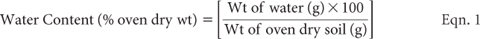
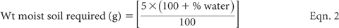
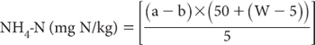

Nitrogen (N) is present in all living matter and is a major constituent of the earth’s atmosphere, where it is enriched relative to the earth’s crust 3:1 by weight. It occurs in intrusive and igneous rocks, largely as ‘fixed’ ammonium (NH4+), with an average content in igneous rocks of 37 mg N/kg (Ure and Berrow 1982). Bremner (1996) reported that the total soil N (TSN) content of soils ranges from <0.02% in subsoils to >2.5% in peats, while the plough layer of cultivated soils often contains between 0.02–0.5% N, with a global mean of 0.2% N (Bowen 1979; Bremner 1996).
Most soil N is associated with organic compounds including proteinaceous forms from plant, animal and microbiological residues. These and all other forms of soil N can undergo chemical and biological transformations under appropriate conditions. Important inorganic combined forms of soil N involved in these reactions include nitrous oxide (N2O), nitric oxide (NO), nitrogen dioxide (NO2), ammonia (NH3), ammonium (NH4+), nitrite (NO2–) and nitrate (NO3–) (Ure and Berrow 1982). The latter three ionic forms constitute the ‘mineral N’ component of TSN.
From a land-use and soil fertility viewpoint, the TSN and ‘mineral N’ components are of particular interest. Nitrate and NH4+ are important sources of N for plant growth, while TSN provides a measure of the quantity of N that can be ‘mineralised’ by micro-organisms. In addition, use of the Haber-Bosch process during the past century of synthetically transforming atmospheric N to NH3 has accelerated the amounts and forms of N added to soils as synthetic fertilisers. Urea, NH3/NH4+ and NO3– are the main forms of N in commercial mineral fertilisers.
Metson (1961), Blakemore et al. (1987), Bruce and Rayment (1982) and Anon (2001) have independently provided ratings for TSN relevant to New Zealand and Australia (Table 7.1). It is postulated that the low organic N status of many Australian soils is related to their naturally low P and S status (Ladd and Russell 1983). These authors also report that for six major soil groups from South Australia, TSN concentrations ranged from 0.04–0.22% N by weight (average of 0.12% N), of which about 3.2% (geometric mean) was biomass N. Australia’s National Land and Water Resources Audit (Anon 2001) reported that the lowest levels of TSN (<0.1% N) are usually associated with rangelands, with highest levels (>0.2% N) found in forest and cultivated soils.
The surface horizons of 11 New Zealand reference soils compiled by Vortman (1980) ranged from 0.09–0.87% N (Kjeldahl method; median 0.33% N), with median concentrations at around 50 and 100 cm in the same soils of 0.06 and 0.02% N, respectively. The modelled distribution of TSN by weight in topsoils for different Australian land uses have been tabulated by Anon (2001). Ants and termites also play a role in the soil N cycle (Lobry de Bruyn and Conacher 1990).
Table 7.1. Ratings for total soÕ N (% N oven-dry wt) for: (i) New Zealand; (ii) Queensland, and (iii) Australia. Blakemore et al. (1987) quotes 0.1–0.3, 0.3–0.6 and 0.6–1.0 for Low, Medium and High ratings for New Zealand soÕs.
|
Value/range |
||
Rating |
(i) Metson (1961) |
(iii) Anon (2001) |
|
Extremely low |
|
|
<0.05 |
Very low |
<0.1 |
0.05 |
0.05–0.1 |
Low |
0.1–0.2 |
0.05–0.15 |
>0.1–0.2 |
Medium |
>0.2–0.5 |
>0.15–0.25 |
|
Moderate |
|
|
>0.2–0.3 |
Moderate–high |
|
|
>0.3 |
High |
>0.5–1.0 |
>0.25–0.50 |
|
Very high |
>1.0 |
>0.50 |
|
While TSN measurements are essential in mass-balance studies and also provide a general indication of the quality of soil OM, they are rarely a good predictor of the responsiveness of crops to N fertiliser applications (Strong and Mason 1998). Those authors reported that NO3-N was commonly a more useful predictor of fertiliser-N requirements, particularly for crops such as cotton, maize, oats, sorghum and wheat grown under Australian conditions.
The reliable measurement of TSN is analytically challenging. This is due partly to the ability of N to transform itself from one chemical species to another (e.g. protein N to NH4+ to NO2–, to NO3– and vice versa) and from gaseous, aqueous, adsorbed and absorbed phases and vice versa. In brief, the N cycle in soil, in which microbes play crucial roles, include fixation, mineralisation, nitrification, leaching, denitrification and plant uptake. These transformations and their reaction rates are influenced by temperature, moisture, soil biological activity, plant species, and soil fertility status, including pH. The fact that transformations can occur during transport of samples to the laboratory, during drying and preparation of samples for analysis, and even during the analytical process (from dust and volatile NH3/NH4+ fumes in particular) adds to the challenge.
There is considerable literature on the sampling and subsequent treatment of soils prior to N analysis, which takes account of the N cycle and the variable distribution of N in soils (e.g. Rayment and Pulsford 1974; Etchevers 1986). In common with C, concentrations of soil N vary with depth, with totals almost always highest in the plough layer, followed by an exponential decline with soil depth (Anon 2001). The reverse, however, can apply to NO3-N due to leaching of native and fertiliser N, at least to the subsoil’s long-term wetting front. Accordingly, soil sampling depth is an important pre-laboratory variable.
Excluding in-field extractions immediately after sampling, which Keeney and Nelson (1982) prefer for valid results for inorganic forms of N, soil samples should be kept clean and at ≤4°C during transport to the laboratory, where they are usually dried, ground and perhaps sieved and stored before analysis. According to Bremner and Mulvaney (1982), it is unlikely that air drying will significantly affect subsequent results for inorganic N, when soils contain low percentages (e.g. 1–3%) of this fraction of TSN, and when drying occurs in the absence of NH3/NH4+ vapours or aerosols. Air drying (temperatures ≤40–45°C) or oven drying (to ≈105°C) of soils containing unusually large amounts of inorganic N, however, may lead to significant transformations and/or losses of N. Drying soils at temperatures >45°C for mineral-N analyses is not recommended (unless there are biosecurity concerns; see Rayment 2006), as N-transformations such as an elevation in apparent NH4-N status, loss of NO2-N, and changes either way in apparent NO3-N status can occur (Rayment and Pulsford 1974; Rayment 1993).
Fine grinding to <0.15 mm or <0.5 μm helps to lessen soil heterogeneity, particularly for TSN, when samples weights of <1.0 g are presented for analysis. Thereafter, the dry samples can usually be stored for prolonged periods in closed plastic or glass containers. Several investigators have shown that prolonged storage of air-dry soils in paper containers open to the atmosphere can result in significant increases in exchangeable NH4-N (Keeney and Nelson 1982).
Table 7.2 has summary details on the methods included in this chapter for measuring TSN, mineral N fractions, and potentially mineralisable N. Further information on each method category is provided under a series of minor headings.
Guided by Rayment and Higginson (1992), Code 7A defines methods for TSN. These embrace three different measurement technologies; viz. wet oxidation, dry combustion (Dumas N), and IR diffuse reflectance spectroscopy. The third digit and fourth letter identify method modifications that deal with the presence of significant NO3-N and different measurement technologies.
Wet oxidation technology (Kjeldahl 1883), has wide acceptance (Bremner and Mulvaney 1982; Craft et al. 1991). Nitrogen in the sample is converted to NH4-N by digestion in the presence of a catalyst, with heating to ≈420°C. Distillation/titration or colorimetric determinations of the NH4-N present or formed (three methodological options) are used to complete the measurement of TSN, following wet oxidation. Choice of analytical ‘finish’ should not significantly affect results, although the technologies are identified by different codes for tracking purposes. Amin and Flowers (2004) have undertaken a contemporary assessment of Kjeldahl methodology.
Unless precautions are taken, Kjeldahl digestion does not ensure quantitative recovery of all forms of soil N, particularly from some heterocyclic compounds and in substances with N-N and N-O bonds (Bremner 1996). Adequate recoveries are usually achieved but when complete recoveries are essential and when soil NO3-N is known to exceed around 0.002%, the sodium thiosulfate-salicylic acid modification of the Kjeldahl digestion procedure should be employed (Method 7A3).
There are also questions about the ability of Kjeldahl digestion to fully recover indigenous, clay-fixed NH4-N (Stewart and Porter 1963). As Australian soils are generally low in this N fraction (Martin et al. 1970, Black and Waring 1972) any associated analytical errors should be inconsequential.
Nowadays, dry, high-temperature combustion systems (Dumas) offer a robust alternative to Kjeldahl digestion for the measurement of TSN. Indeed, a range of manufacturers have developed automated and/or microprocessor controlled instruments, which mostly are able to measure at least total C, N and S in the same sample. For examples of manufacturers, operating principles and typical applications, see Table 1 of Smith and Tabatabai (2004). The technology is suited to 15N tracer studies. Dumas N dry oxidation includes all forms of N, without the need for lengthy pretreatments (Bellomonte et al. 1987). Tests on fully automatic equipment should take around 3–5 min each to perform. Practical quantitation limits depend on the amount of sample used but are typically around 0.01–0.02% TSN.
Analytically, finely ground soil samples (≤0.5 mm) of known weight are sequentially introduced into an oxidation furnace and subjected to flash combustion from about 900–1350°C in a stream of O2, releasing N2, NOx and other gases. These gases then pass into a reduction furnace containing Cu at about 650°C, which removes excess O2 and converts NOx to N2, noting that CO2 and water vapour are absorbed in chemical traps (usually in anhydrone tubes). The N2 gas is separated from residual imputities and quantified, commonly by thermal conductivity (McGill and Figueiredo 1993). As with soil C and because multiple elements may be analysed concurrently, analytical cleanliness and freedom from detectable impurities are essential, particularly to prevent positive errors at low elemental concentrations. Similarly, soil sampling and grinding equipment should be free of oil/waxes and corrosion inhibitors, as these substances can transfer impurities to the sample (e.g. Dowling et al. 1985), including C that is often measured simultaneously with TSN.
Table 7.2. Summary detaÕs of method codes, method titles, technologies and notes on soÕ N tests described in this chapter.
Code |
Technology |
Test method |
Notes |
7A1 |
Semi-micro Kjeldahl, steam distillation. |
Total soil N (TSN) with three analytical finish options. |
Good estimate of TSN in soils with little NO3: otherwise lower concentrations are likely. |
7A2 |
Semi-micro Kjeldahl, automated colour: a) SFA; and b) FIA. |
|
|
7A3 |
Modified Kjeldahl, steam distillation. |
TSN (where nitrate >20 mg N/kg). |
Good estimates of TSN: results little affected by analytical finish. |
7A4 |
Modified Kjeldahl, SFA/FIA. |
|
|
7A5 |
Catalised, high-temperature combustion. |
TSN – Dumas. |
Best estimate of TSN. |
7A6a |
Infrared diffuse reflectance spectroscopy. |
TSN – NIR reflectance spectroscopy. |
Reasonable estimate of TSN (surrogate by correlation). |
7A6b |
|
TSN – MIR reflectance spectroscopy. |
|
7B1a |
Extraction, followed by automated colour analysis. |
Water-soluble NO3-N – automated colour, SFA. |
Fair estimate of NO3-N but extractant may not remove all NO3-N in soils with positive surface charged colloids: results little affected by analytical finish. |
7B1b |
|
Water-soluble NO3-N – automated colour, FIA. |
|
7B2a |
Extraction, followed by analysis by IC. |
Water-soluble NO3-N – analysis by IC (chemical suppression of eluent conductivity or by single-column with electronic suppression of eluent conductivity). |
As above. Proven analytical technology but requires finely filtered extract. |
Extraction, followed by steam distillation. |
Mineral-N with 2 M KCl, – steam distillation. |
Best estimate of mineral-N fractions in all soils. Results little affected by analytical finish. |
|
7C1a |
|
NH4-N, in presence or absence of NO2. |
|
7C1b |
|
(NO2 + NO3)-N, in presence of NO2. |
|
7C1c |
|
(NH4 + NO2 + NO3)-N, in presence of NO2. |
|
7C1d |
|
(NH4 + NO3)-N, in presence of NO2. |
|
7C1e |
|
NO3-N, in presence of NO2. |
|
7C1f |
|
NO3-N, in absence of NO2. |
|
7C1g |
|
(NH4 + NO3)-N, in absence of NO2. |
|
7C1h |
|
NO2-N. |
|
7C2a |
Extraction, followed by automated colour analysis. |
Mineral-N with 2 M KCl – automated colour, SFA. |
|
7C2b |
|
Mineral-N with 2 M KCl – automated colour, FIA. |
|
7D1 |
Potentially mineralisable N. |
Potentially mineralisable N extracted by hot KCl, with multiple analytical options, including automated colour [continuous segmented flow (7D1a) and FIA (7D1b)], and NIR (7D1c). |
Indicative and empirical. |
7D2 |
|
Potentially mineralisable N – aerobic incubation, with separate automated colour options [continuous segmented flow (7D2a) and FIA (7D2b)]. |
|
In common with other high temperature combustion instrumentation, the analyst must take precautions to prevent burns and fires, and also while handling compressed gases. Certainly avoid open flames and sparks and have a fire blanket and an appropriate fire extinguisher close to hand.
As an alternative to direct measurement, TSN can be ‘predicted’ by mathematical relationships established between both NIR and MIR reflectance spectroscopy and conventionally measured TSN concentrations (Janik et al. 1998; Meyer 1998; Malley et al. 1999; Merry and Janik 2001). These non-destructive techniques are coded as 7A6a and 7A6b, respectively. They create no adverse environmental wastes and can have very good precision, but accuracy depends on confirming highly significant correlations between conventionally measured TSN concentrations. Generic calibration datasets require comprehensive local validation prior to routine use.
Other than in research papers dealing with the use of IR reflectance spectroscopy, comparative data on this technology relative to ‘conventional’ methods of chemical analysis for TSN has still to emerge. Comparative data for Method 7A2 based on Kjeldahl digestion (not modified to include all NO3-N) and by Dumas high-temperature combustion (Method 7A5) are available from ASPAC interlaboratory proficiency programs. Across 72 finely ground reference soils ranging from around 0.01–0.58% N, the grand median for Method 7A2 was 0.116% N, compared with 0.120% N for Method 7A5, which approximates to 1:1.007. How robust coefficients of variation can be expected to vary continuously with increasing TSN concentrations by the two methods are shown in Figure 7.1. The data are from laboratories across Australasia that participated in ASPAC inter-laboratory proficiency programs from 1997–2007 (e.g. Peverill and Johnstone 1997; Rayment et al. 2007).
The measurement of NH4-N and NO3-N in soils must be undertaken with close attention to detail, noting air drying invalidates results for NO2-N (Keeney and Nelson 1982).
Water or salt solutions are suitable extractants for NO3-N (and NO2-N) across the great majority of soils, although water may fail to extract all NO3-N held weakly on positively-charged surfaces of variably charged soil colloids. In terms of quanties that can be adsorbed, anion exchange capacities up to 3.5 cmolc/kg have been measured in subsoils of highly weathered soils derived from basalt in the Tully–Innisfail area of North Queensland (Gillman and Abel 1987). Chloride will readily replace this adsorbed NO3–.
Figure 7.1. Soil TSN concentrations by two methods vs % robust CVs.
As (potentially) a monovalent exchangeable base, NH4-N must be displaced from the surface of negatively charged soil colloids with another cation, commonly K+ or Na+. The unionised form (NH3) is increasingly likely to be present when soil pH values exceed pH 9.0. Once extracted, NH4-N, NO3-N and NO2-N can be determined conveniently by steam distillation/titration or by automated colorimetric procedures. More details are given in preambles to these methods.
Ion chromatography provides an alternative, reliable, yet relatively slow analytical finish for water-soluble NO3-N in the mg/kg concentration range, simultaneously with other common soil anions (an analytical positive). The need to inject a finely-filtered aliquot (<0.45 μm with <0.20 μm membrane filter preferred) of the 1:5 soil/water extract into the IC, unless automated, adds to laboratory-operator time and effort. Extracts with elevated EC levels also need to be diluted. See Australian Standard AS 3741 (Anon 1990) and to the preamble to water-soluble Cl– Method 5A3a for more details on IC technology, which does avoid the need to use hazardous reagents during analysis (APHA 2005).
Choice of method for components of soil mineral-N is largely an issue of preference and the laboratory’s level of instrumental sophistication and operator training. Another consideration is analytical performance, albeit little comparative data are available from Australasia. The continuous relationships (see Figure 7.2) for NO3-N and NH4-N concentrations, respectively, and % robust CVs derive from ASPAC inter-laboratory proficiency programs from 1997–2007 (e.g. Peverill and Johnstone 1997; Rayment et al. 2007).
Ion selective electrodes for both NH4-N and NO3-N offer an alternative measurement technology. Details are not included, however, as both electrodes can suffer from serious interferences [e.g. K+ interferes strongly with the NH4+ electrode, while several anions can interfere – electrode (Mulvaney 1996)]. Several Australian soil testing services in the 1960s–1970s did use the NO3-N ion selective electrode for both diagnostic and research purposes, but confidence in the accuracy of results at the time was low.
Estimates of how much soil N will be released as NH4+ and NO3– (forms that can be utilised by plant roots) are challenged by the dynamic nature of soil N. Temperature, moisture and soil biology all have an influence in releasing mineral-N from OM. Therefore, it is not surprising many chemical and bio-chemical methods have been developed in efforts to quantify PMN or contributing components (e.g. Bremner, 1965; Adams and Attiwill 1986; Lowe 1993; Wang et al. 1996; Wang et al. 2003; Mulvaney et al. 2003; Kliese et al. 2005). No indicies have achieved universial success, yet estimates of PMN can help guide the need for N fertilisers.
Figure 7.2. Concentrations of soil mineral-N components vs % robust CVs.
In situ techniques are often used to estimate expected net N mineralisation (e.g. Raison et al. 1987). Constraints of these and laboratory-based incubation methods include the lengthy time they take, often multiple days under aerobic or anaerobic conditions. Chemical methods are more convenient for soil testing services, with rapidity their main attribute.
Two laboratory-based methods for PMN are included. The first is a chemical procedure that utilises hot-KC1 extraction, as this has been shown to correlate with biological methods (Gianello and Bremner 1986a,b; Wang et al. 1996). Extraction conditions, however, are inconsistent with respect to temperature and extraction time, which range from 100°C for 2–4 h (Gianello and Bremner 1986a; Walley et al. 2002; Benbi and Haer 2007) to 90°C for 16–20 h (Øien and Selmer-Olsen 1980; Wang et al. 1996), with 90°C for 16 h preferred for soils containing high concentrations of OM. McTaggart and Smith (1993) showed there was a good correlation between hot KC1-extractable N and N uptake by barley; however Curtin et al. (2006), working with 30 soils from New Zealand, found hot water-extractable N to be superior to hot 2 M KCl as a chemical predictor of PMN. It is an advantage that the method is not-appreciably affected by air drying or by air-dry storage of soil samples (Gianello and Bremner 1986a).
The second PMN method utilises anaerobic incubation in the laboratory for seven days, based broadly on the methods of Waring and Bremner (1964) and Keeney and Bremner (1966). The method to obtain an index of PMN to plants relies on estimation of the NH4-N formed, relative to that originally present, when soil is incubated in water for seven days and subsequently extracted by 2 M KCl. This test uses field-moist soils that need to be handled carefully between sampling and preparation for analysis to minimise ongoing N transformations. The method is unsuitable for use on air-dried soils.
This semi-micro Kjeldahl method is based on use of 100 mL digestion flasks (heat resistant). Alternatively, digestion tubes (e.g. 50 mL) and a drilled Al block on a hotplate can be used for the digestion step, with appropriate adjustments to weights and volumes of soil and reagents.
Sodium hydroxide is then added to release NH3 by steam distillation. The NH3 is subsequently absorbed in dilute boric acid (H3BO3), with TSN determined by titration with standard acid.
See Figure 7.3 for an example of a ‘conventional’ steam distillation apparatus, similar to that described by Bremner (1996). This apparatus, constructed from borosilicate glass, may require modification to suit 100 mL digestion flasks or smaller Kjeldahl digestion tubes.
Digest Acid
Commercial grade sulfuric acid (H2SO4; 18 M).
Catalyst Mixture
Prepare an intimate mixture of 1.0 kg anhydrous sodium sulfate (Na2SO4) and 100 g of anhydrous copper sulfate (CuSO4) after first grinding each component separately. Alternatively use Kjeldahl catalyst tablets containing 1.0 g Na2SO4 and 0.1 g CuSO4.
Figure 7.3. Steam distillation apparatus of the general type required for total-N and mineral-N analysis.
60% Sodium Hydroxide Solution
Dissolve 600 g commercial or technical grade sodium hydroxide (NaOH) in deionised water, cool and make to 1.0 L.
2% Boric Acid Solution
Dissolve 80.0 g boric acid (H3BO3) in about 3 L of water, heating if necessary. Add water to make 4 L of solution. Adjust pH to 5.0 with dilute NaOH immediately prior to use. If ≤5000 μg of N needs to be fixed, 1% H3BO3 aqueous solution (10.0 g H3BO3/L) can be substituted to increase the sharpness of the end point.
Bromocresol Green – Methyl Red Mixed Indicator
Mix 5 parts 0.1% bromocresol green (C21H14Br4O5S) dissolved in 95% ethanol (C2H5OH) with 1 part 0.1% methyl red (C15H15N3O2) in 95% C2H5OH. Proportions may need to vary slightly to obtain the neutral-grey transition colour of the indicator. Those who suffer from colour blindness may need to use an alternative indicator with more obvious colour-change characteristics.
0.010 M Hydrochloric Acid
1 mL ≡ 0.1401 mg of N.
To prepare 20 L, dilute 20.0 mL hydrochloric acid (HCl; 10 M) with deionised water, cool and make to volume. Standardise against sodium tetraborate (Na2B4O7.10H2O), which has been stored in a desiccator over an aqueous saturated solution of NaCl and sucrose for at least 24 h. Weigh out 0.9535 g Na2B4O7.10H2O, dissolve in deionised, CO2-free water and make to 500 mL. Titrate 25 mL aliquots with the 0.01 M HCl using the mixed indicator (Alvarez 1984).
Note that 0.005 M H2SO4 may substitute for 0.010 M HCl and is preferred for 15N analyses. Also, alternatives to Na2B4O7.10H2O can be substituted for standardisation purposes.
Digest and distil a reagent blank (see Note 1) with each batch of assays, using distillation apparatus similar to that shown in Figure 7.3. Weigh 1.00 g of finely-ground (<0.5 mm), air dry soil into a 100 mL Kjeldahl digestion flask (see Note 2). Add 2.0 mL deionised water and, after swirling for a few minutes, allow to stand for 30 min. Add 2.2 g catalyst mixture (or two catalyst tablets) and 6.5 mL of digest acid (H2SO4). Heat flasks cautiously in a fume cupboard or with an attached fume extractor until water is lost and frothing has ceased. Increase heat so that H2SO4 condenses about one-third way up the neck of the digestion flasks. Continue boiling for 2 h after the soil has become bleached. On completion of digestion, cool, then add slowly and with swirling, about 30 mL deionised water to prevent solidification of the digest solution on complete cooling. There is no requirement to dilute to a known volume.
Prepare the distillation apparatus (Figure 7.3; see Note 3) by adding 10.0 mL of 2% H3BO3 to each 100 mL borosilicate beaker or flask. Place the beaker under the condenser outlet so the end of the condenser is just below the surface of the H3BO3 solution. Carefully add ≈25–30 mL 60% NaOH Solution to each digestion flask and quickly attach the flask to the distillation unit; the solution should be distinctly alkaline, commonly indicated by the formation of a brown precipitate of ferric hydroxide – (Fe(OH)3). Distil for 5 min at a distillation rate of ≈8 mL/min until at least 30 mL are collected. Lower the beaker so the condenser tip is above the solution and rinse the end of the condenser with deionised water. Remove flasks and stop distillation. Temperature of the distillate should not exceed 40°C to prevent loss of N as NH3.
Add 5–6 drops of the mixed indicator and titrate the distillate with standardised 0.01 M HCl. The end-point is indicated by a colour change from pale green to faint pink.
If preferred, the end point of the titration with 0.01 M HCl can be determined potentio-metrically to pH 5.0, although the ionic strength of individual solutions can affect this pH slightly.
For 1 g of air-dry soil sample and 0.01 M HCl on the total digest.
%TSN [(sampletitre – blank titre) × 0.014]
Make appropriate adjustments for differences in sample weight and concentration of acid.
Report TSN (%N) on an oven-dry basis. Use the air-dry moisture to oven-dry moisture ratio to make the oven-dry conversion. Refer to Method 2A1 for guidance with regard to this soil moisture calculation.
1. To ensure the digest blanks are as realistic as possible with respect to C content (and to help detect any NO3 – contamination that might otherwise go undetected in the blank), add a small quantity of sucrose, to approximately reflect the soil’s TOC concentration. Information on the C content of sucrose is provided in Chapter 6.
2. For convenience during subsequent steam distillation, use a standard length 100 mL semi-micro Kjeldahl digestion flask fitted with a ground glass socket and two glass hooks.
3. See Bremner and Mulvaney (1982) and Saffigna and Waring (1977) for details on appropriate glass and stainless steel steam distillation apparatus.
Segmented, continuous flow analysis technology is broadly described elsewhere (e.g. Gordon et al. 1993; Section 4120 of APHA 2005). The SFA herein outlined is an example based on AutoAnalyzer I/II technology. It is recognised, however, that improvements in system performance are ongoing, including faster rates of analysis, lower reagent volumes, more reliability, automatic data handling, sample dilution and speedier reagent change-over. Reductions in dispersion have centred on smaller internal diameters of reaction tubing, down from 2.4 mm in the Technicon AutoAnalyzer I, to 2 mm in the AutoAnalyzer II, and to 1 mm in more modern instruments (Jodo et al. 1992). The latest systems incorporate a better understanding of the way in which dispersion, tubing diameter and flow rate are interrelated (Gordon et al. 1993).
To accommodate the automated colorimetric finish, the Kjeldahl digest described in Method 7A1 is diluted to a known volume. The NH4-N and any free amino acids in diluted digest solutions are measured colorimetrically at 660 nm by the nitroprusside/dichloro-S-triazine modification (Searle 1975; Blakemore et al. 1987) of the Berthelot indophenol reaction reviewed by Searle (1984). Free amino groups that can react are most likely to be present in soils that have been fumigated or dried at elevated temperatures (Burton et al. 1989).
The continuous flow instrumentation uses a peristaltic pump to draw sample extracts from the sampler into a manifold designed to mix the samples with reagents that are being pumped at predetermined flow rates, and on eventually to the colorimeter detector. It is acknowledged that the analyst must be guided by the operational instructions and directions given by the manufacturer. This could require changes to the specified reagents and to the flow diagram provided for this method.
Digest Acid
As for Method 7A1.
Catalyst Mixture
As for Method 7A1.
Sodium Nitroprusside Reagent
Dissolve 1.2 g sodium nitroprusside dihydrate {Na2[Fe(CN)5NO].2H2O} in deionised water and dilute to 500 mL.
Dichloro-S-triazine Solution
Dissolve 10.0 g sodium hydroxide (NaOH) in 400 mL deionised water, add 0.25 g of 1-sodium-3,5-dichloro-S-triazine-2,4,6-trione (C3HCl2N2O3.Na) and make to 500 mL. The active chemical in this reagent is also called sodium dichloroisocyanurate. Commercial grade reagent is satisfactory.
Sodium Salicylate
Dissolve 15.0 g sodium salicylate [C6H4(OH)COONa] in deionised water and make to 1 L.
Citrate–Tartrate Complexing Agent
Dissolve 25.0 g NaOH in 800 mL deionised water. Add 6.0 g tri-sodium citrate (Na3C6H5O7.2H2O) and 18.0 g sodium hydrogen tartrate (NaC4O6H5.H2O), dissolve, and make to 1.0 L with deionised water.
Digest Blank Solution
Carefully add 65 mL digest acid (H2SO4) to ≈1.0 L deionised water; add 20.0 g Na2SO4 and 2.0 g anhydrous CuSO4. Dissolve and make to 1.5 L. Alter as necessary to reflect the actual catalyst used.
Nitrogen Primary Standard
1 mL contains 0.20 mg of N.
Dissolve 0.4717 g ammonium sulfate [(NH4)2SO4; previously dried at 100°C for 4 h] in digest blank solution and make volume to 500 mL.
Nitrogen Working Standards
Dispense accurately 0, 2, 4, 6, 10, 15, 20, 30, 50 and 60 mL N Primary Standard to separate 500 mL volumetric flasks and dilute to volume with digest blank solution. These solutions contain 0, 0.8, 1.6, 2.4, 4.0, 6.0, 8.0, 12.0, 20.0 and 24.0 mg N/L, equivalent to 0, 0.012, 0.024 … 0.36% N for a soil/solution ratio of 1:150.
Weigh 1.00 g of ground (<0.5 mm) air-dry soil into a 100 mL Kjeldahl digestion flask, graduated at 150 mL. Add 2.0 mL deionised water, swirl and stand for 30 min then add 2.2 g catalyst mixture (or two catalyst tablets) and 6.5 mL H2SO4 (see Note 1). Digest as described in Method 7A1. Cool, dilute to 150 mL with deionised water and shake well. After any solids have settled, or if necessary after centrifugation, take an aliquot for autoanalysis.
Set up autoanalysis equipment as shown in flow diagram (Figure 7.4), noting that instrument selections and settings should be in accord with manufacturer’s instructions. ‘Condition’ the manifold before use, make a final check on instrument settings, degas reagents if necessary, then determine N concentrations in soil digest solutions directly from relevant working standards run on commencement and as required throughout the batch of unknowns. If necessary, dilute digests containing >24 mg N/L with digest blank solution or redigest using a reduced sample size. Also use digest blank as the wash solution during auto analysis.
Report TSN (%N) on an oven-dry basis. Use the air-dry moisture to oven-dry moisture ratio to make the oven-dry conversion. Refer to Method 2A1 for guidance with regard to this soil moisture calculation.
1. Some soils can consume sufficient H2SO4 during Kjeldahl digestion to cause errors in the subsequent colorimetric determination of N (Blakemore et al. 1987). No adjustment to the volume of H2SO4 should be necessary with this method, however, at common soil N concentrations, as the boundary condition of 15% H2SO4 consumed should not be reached, even when soils are highly calcareous.
The method described is a modified semi-micro Kjeldahl procedure (Blakemore et al. 1987) in which digestion occurs in 50 mL calibrated test tubes in a drilled Al metal block on a hotplate. Concentrated H2SO4 plus anhydrous sodium sulfate (Na2SO4) is used to raise the distillation temperature to ≈375–400°C, with Cu as a catalyst. The effect over a few hours is to convert complexed N in soil samples to NH4-N. Use of a heating block with a maximum temperature option of 400°C helps prevent possible N loss from overheating.
Figure 7.4. Soil total N automated colour continuous segmented flow sheet.
Ammonium and any free amino acid in the digest solution (after making to volume) are determined by the colorimetric Berthelot reaction utilising FIA. Such systems typically operate at high sensitivity. This automated technology involves introducing, under the force of a peristaltic pump, a precisely measured volume of liquid sample from the sampler into a continuously flowing carrier stream. An injection valve with a fixed-volume sample loop or an injection valve with a fixed time period determines the injected volume of sample. A carrier stream sweeps the sample out of the loop and into the manifold where it disperses. The concentration gradient formed is detected continuously by (in this case) a colour reaction that occurs in the presence of continuously flowing reaction solutions. Refer to Section 4130 of APHA 2005 for further details of the technology.
Specifically, NH4+ reacts with hypochlorite ions that are generated in situ by alkaline hydrolysis of sodium dichloroisocyanurate. This reaction forms monochloramine, which then reacts with salicylate ions in the presence of sodium nitroprusside to form a blue, indophenol-type compound that absorbs strongly at 660 nm. A citrate buffer is employed to chelate metals that would otherwise form insoluble hydroxides or carbonates. Free amino groups that can react are most likely to be present in soils that have been fumigated or dried at elevated temperatures (Burton et al. 1989).
A reasonable but incomplete estimate of total soil P can also be determined following Kjeldahl digestion, as used in this method. Accordingly, standard solutions include P as well as N. Potassium can also be included; see Note 1.
Digestion Tubes
Heat resistant, borosilicate glass tubes 2.5 cm dia and carefully calibrated at 50 mL.
Solid Al metal block (30 cm × 30 cm × 5 cm) drilled with seven rows of six holes (2.7 cm dia, 3.5 cm depth), or a convenient alternative.
Hotplate
One option is a domestic stove-style single radiant element hotplate about 20 cm dia and an output of about 2 kW, mounted on a steel frame and fitted with a simmerstat for temperature control. The unit or the control setting should not permit temperatures in digest solutions >400°C.
FIA Instrumentation
A Lachat™ system is described (Quikchem Methods Manual, undated). As with segmented flow instrumentation, the analyst must be guided by the operational instructions and directions given by the particular FIA manufacturer. This could require changes to the specified reagents and to the flow diagram (Figure 7.5) provided for this method.
Digest Acid
Commercial grade sulfuric acid (H2SO4; 18 M).
Kjeldahl Copper Catalyst Tablets
BDH Cat No. 33064. Each tablet contains a mixture of 1 g anhydrous sodium sulfate (Na2SO4) and 0.1 g anhydrous copper sulfate (CuSO4).
Kjeldahl Matrix Solution
Carefully add 120 mL of 18 M H2SO4 to 1500 mL of water in a 2 L conical flask. Add 40 g anhydrous sodium sulfate (Na2SO4), 4 g anhydrous copper sulfate (CuSO4), and dissolve. Make to 2.0 L with deionised water.
Buffer Solution
To a plastic 1.0 L bottle add 65 g sodium hydroxide (NaOH), 50.0 g potassium sodium tartrate tetrahydrate (NaKC4H4O6.4H2O), and 14.2 g anhydrous sodium phosphate dibasic (Na2HPO4) and make to 1.0 L with deionised water. Shake to fully dissolve.
Salicylate–Nitroprusside Solution
To an amber glass bottle add 150 g sodium salicylate [C6H4(OH).COONa] and 1.0 g sodium nitroprusside [Na2Fe(CN)5NO.2H2O] and make to 1.0 L with deionised water. Shake to fully dissolve. Prepare fresh monthly.
Hypochlorite Solution
To a plastic 1 L bottle add 30 mL of commercial bleach (≈5.25% NaOCl) and make to 500 mL with deionised water. Prepare fresh weekly and keep cool when not in use.
Kjeldahl Ammonium, Phosphate and Potassium Primary Standard
1 mL contains 0.5, 0.1 and 0.5 mg of NH4-N, PO4-P, and K (as KCl), respectively; see Note 1.
Carefully weigh and dissolve separately in Kjeldahl Matrix Solution: (i) 2.3585 g ammonium sulfate [(NH4)2SO4; previously dried at 100°C for 4 h]; (ii) 0.4583 g disodium hydrogen phosphate [Na2HPO4; previously dried at 105°C for 24 h], and (iii) 0.9534 g potassium chloride [KCl; previously dried at 110°C for 2 h]. Add each while mixing into a 1.0 L standard flask and make to volume, again with Kjeldahl Matrix Solution. Add 2–4 drops of chloroform (CHCl3) to suppress biological activity and store in a borosilicate container for up to 6 months.
Kjeldahl Combined N, P and K Working Standards (KCWS)
Carefully and accurately transfer into 250 mL volumetric flasks 2.5, 5.0, 12.5, 25.0, and 50.0 mL of Kjeldahl Combined Ammonium, Phosphate and Potassium Primary Standard and make each to volume with Kjeldahl Matrix Solution. These KCWS contain 5.0, 10.0, 25.0, 50.0 and 100 mg N (as NH4) and mg K/L, and 1.0, 2.0, 5.0, 10.0, and 20.0 mg P/L (as PO4).
Weigh 0.50 g (0.1–0.2 g for peats or litters) of finely ground (<0.5 mm) air-dry (≈40°C) sample into clean, dry 50 mL calibrated test tubes, and note the actual sample weight. Include reagent (digest) blanks (see Note 1, Method 7A1) and control samples (known TSN content) at a frequency of two of the former to one of the latter for each batch of around 40–50 digest tubes.
Moisten the weighed soil samples with a few drops of deionised water, allow the moisture to penetrate, then add one Kjeldahl Copper Catalyst Tablet, 3.25 mL 18 M H2SO4, then swirl gently to mix and place on the preheated Al heating block. (Soils high in OM need careful watching to prevent loss of sample by frothing. If this occurs remove tube from rack to allow froth to settle then replace and resume digestion.)
Boil the Kjeldahl digestion mixture until it decolorises (usually a pale greenish-brown or off-white colour) and then carry on with the digestion for a further 20–30 min.
Next remove all digestion tubes from the Al heating block then 5–6 min later (to permit some cooling), carefully add 10–15 mL deionised water and swirl to dissolve any partly dried digest mixture that may have adhered to sides of the digestion tubes. When cooled to room temperature, make to volume (50 mL) with deionised water, stopper (this stopper should be inert), and shake vigorously to fully mix/dissolve the water-soluble contents then allow any solids to settle out.
In preparation for FIA, transfer a sub-sample from each digestion tube (volume will be determined by specifications of the autosampler; e.g. 15 mL).
Set up the FIA equipment as shown in the flow diagram (Figure 7.5), noting instrument selections and settings should be in accord with manufacturer’s instructions. For example, switch on the computer, load the software, load the sampler, inject/pump water through all reagent lines and check for leaks and smooth flow. Switch to reagents and allow the system to equilibrate for a few minutes. Ensure buffer flow is well established before pumping Salicylate–Nitroprusside Solution (it can precipitate unless it goes into an alkaline stream). Run Working Standards and sample digest solutions as necessary. Degas reagents if necessary.
where:
a = N in sample digest, expressed as mg/L
b = N in digest blank (mg/L)
V = final volume of sample digest (mL, usually 50 mL)
Figure 7.5. Soil total-N automated FIA flow sheet.
W = sample weight (g)
10–4 = factor to convert mg/kg to g/100g (%)
For a 0.5 g air-dry sample and a 50 mL final digest volume:
TSN (% N) = [(a – b) × 0.01]
Report TSN (%N) on an oven-dry basis. Use the air-dry moisture to oven-dry moisture ratio to make the oven-dry conversion. Refer to Method 2A1 for guidance with regard to this soil moisture calculation.
1. While K is included in both the Primary Standard and in Working Standards, this does not infer the resultant estimate of Total Kjeldahl K is a good approximation of total soil K. Indeed, recoveries can be as low as 5–10% of the true total.
The salicylic modification to ensure recovery of NO3-N and NO2-N during Kjeldahl digestion was introduced by Cope (1916). Nitro-compounds are initially formed when soils containing NO3-N react with salicylic acid/H2SO4. These nitro-compounds are subsequently reduced to corresponding amino compounds by heating and mixing with sodium thiosulfate (Na2S2O3.5H2O), prior to conventional Kjeldahl digestion/distillation.
Bremner and Mulvaney (1982) reported similar recoveries of NO3-N and NO2-N during Kjeldahl digestion to those obtained by a permanganate-reduced iron procedure (not described). Use of purified KNO3 and NaNO3 standard solutions, however, are recommended as a check on recoveries.
Soils justifying use of this method include those that have recently received significant inputs of N fertiliser and/or sewage sludge, feed-lot manure and the like. Soils used repeatedly for vegetable production are also eligible, because of likely elevated soil NO3– concentrations (e.g. Rayment 1994).
Catalyst Mixture
As for Method 7A1.
Sulfuric–Salicylic Acid Digest Mixture
Dissolve 33.3 g salicylic acid (HO.C6H4.COOH) in 1.0 L H2SO4 (18 M).
Sodium Thiosulfate
Use fine crystals of Na2S2O3.5H2O.
60% Sodium Hydroxide Solution
As for Method 7A1.
2% Boric Acid Solution
As for Method 7A1.
Bromocresol Green–Methyl Red Mixed Indicator
As for Method 7A1.
0.010 M Hydrochloric Acid
As for Method 7A1.
Digest and distil a reagent blank with each batch of assays. Weigh 0.200 g of ground (<0.5 mm) air-dry soil into a Kjeldahl flask (see Note 1, Method 7A1). Add 8.0 mL Sulfuric–salicylic Acid Digest Mixture and allow to stand with occasional shaking for 1 h. Stopper digestion flask (stopper should be contamination free) and leave overnight.
Next day, add 0.5 g Na2S2O3.5H2O through a long-neck funnel and heat gently for about 5 min. Remove from heat and when cool, add 2.2 g catalyst mixture (or the equivalent in tablet form) and complete both digestion and distillation as for Method 7A1.
For a 0.200 g air-dry sample and 0.010 M HCl on the total digest:
%TSN = [(sampletitre – blank titre) × 0.07]
Report TSN (%) on an oven-dry basis. Use the air-dry moisture to oven-dry moisture ratio to make the oven-dry conversion. Refer to Method 2A1 for guidance with regard to this soil moisture calculation.
This modified Kjeldahl digestion method can achieve quantitative recovery of all forms of soil N. It is similar to Method 7A3 except it involves an automated colour continuous SFA finish based on the Berthelot indophenol reaction reviewed by Searle (1984). The analytical finish is that of Method 7A2a but with different working standards and wash solution, noting the SFA system outlined is an example based on AutoAnalyzer I/II technology. Slight changes to reagents, flow rates, etc. may be necessary if the laboratory’s SFA system is amenable to faster rates of analysis, lower reagent volumes, micro-bore tubing, speedier reagent change-overs, sample dilution, automatic data handling and the like. See the preamble to Method 7A2a for background information on SFA. Alternatively, FIA technology, outlined in the preamble to Method 7A2b, can be used.
To accommodate the automated colorimetric finish, the modified Kjeldahl digest described in Method 7A3 is diluted to a known volume. The most relevant soils include those recently fertilised with N and those that have received significant applications of sewage sludge, feed-lot manure, etc. Soils used repeatedly for conventional vegetable production are also candidates for inclusion (e.g. Rayment 1994).
Sulfuric–Salicylic Acid Wash Solution
Take 53 mL Sulfuric–salicylic Acid Digest mixture and 3.3 g sodium thiosulfate (Na2S2O3.5H2O) and heat gently for about 5 min, then remove from heat. When cool, add 14.7 g of catalyst mixture and digest to dissolve. Cool and dilute carefully to 1.0 L with deionised water.
Nitrogen Primary Standard
1 mL contains 0.20 mg of N.
As for Method 7A2a, but make to volume (500 mL) with Sulfuric–salicylic Acid Wash solution.
Nitrogen Working Standards
Dispense accurately 0, 1, 2, 3, 4, 6, 10, 15, 20 and 30 mL of N Primary Standard into separate 500 mL volumetric flasks and make to volume with Sulfuric–salicylic Acid Wash solution. These solutions contain 0, 0.4, 0.6 … 12.0 mg N/L. For 0.2 g soil sample in 150 mL of solution (i.e. a 1:750 soil/solution ratio) these standards are equivalent to soil concentrations of 0, 0.03, 0.045 … 0.9% N.
Weigh 0.200 g of ground (<0.5 mm) air-dry soil into a calibrated (e.g. 150 mL) Kjeldahl flask. On completion of digestion as described in Method 7A3, make to volume with deionised water.
Set up and operate autoanalysis equipment as described in Method 7A2a but use the Sulfuric–salicylic Acid Wash solution and the N Working Standards described above. Dilute digest solutions that test in excess of the upper working standard with Sulfuric–salicylic Acid Wash solution or redigest soil using a reduced sample size. If necessary, make similar adaptations for FIA, guided by Method 7A2b.
Report TSN (%) on an oven-dry basis. Use the air-dry moisture to oven-dry moisture ratio to make the oven-dry conversion. Refer to Method 2A1 for guidance with regard to this soil moisture calculation.
Dumas high-temperature combustion technology has advantages for the measurement of TSN for several reasons (McGill and Figueiredo 1993). For example, all forms of soil N can be included without pre-treatments; it can be adapted for 15N tracer studies when linked to an isotope ratio mass spectrometer; it eliminates the need for strong-acid digestions; requires little laboratory bench space, and has multi-element capability. Disadvantages include occasionally lower apparent TSN concentrations in soils with high levels of fixed NH4-N, and the reverse (due to incomplete combustion resulting in the formation of methane rather than CO2) in some organic-rich soils (Bremner 1996).
Nowadays, several manufacturers produce high-temperature combustion analysers suited to the measurement of TSN across a range of concentrations (e.g. 0.02 to >0.5% N). Typically, the dry, finely-ground sample is subjected to high-temperature combustion (e.g. 900–1350°C) in a stream of purifed O2. An aliquot of the gases produced by combustion is carried by helium gas to a thermal conductivity cell for measurement of any N2 generated, a process typically taking 3–5 min. A heated Cu catalyst reduces NOx to N2. The example methodology described is based on the automated LECO™ CNS 2000 analyser.
Finely ground (<0.5 mm), air-dry (40°C) soil samples are required. These are accurately weighed into ceramic boats and then combusted. Water and CO2 are subsequently absorbed in an anhydrone tube, leaving the N2 to be measured by thermal conductivity. Practical quantitation limits depend on the amount of sample used but are typically around 0.01–0.02% N. At all times, workplace health and safety procedures need to be in place and followed, given the use of high temperature combustion and pressurised O2 gas. Have a fire blanket and an appropriate fire extinguisher close to hand.
LECO™ CNS–2000 analyzer or equivalent, plus essential gases and other accessories.
Ethylenediaminetetraacetic Acid Reference Standard (EDTA)
Use dry (105°C for 2 h), high-grade EDTA (C10H16N2O8), calibrated against EDTA certified by the instrument manufacturer. When fully dry, this contains 9.586% N.
Other Reagents
Use those specified by the instrument manufacturer.
Set up and maintain the high-temperature combustion analyser in accord with the manufacturer’s Operation and Procedures’ Manual. This includes performing door-maintenance and a combustion-leak check.
Run three separate ceramic ‘boats’ of EDTA Reference Standard (9.586% N) to stabilise the detectors, noting that irritating, toxic NOx is released when EDTA is heated to its decomposition temperature of 240°C. Next combust three empty ceramic ‘boats’ as blanks, using 0.200 g as the weight, to set the instrument blank from these results. Follow this by weighing into ceramic ‘boats’ and analysing three separate replications of EDTA Reference Standard. Use the two closest results to perform a drift correction. Confirm the instrument setup and calibration by analysing at least one internal LCS for quality assurance purposes, using a weight between 0.3 and 0.75 g depending on the expected concentration.
If the LCS sample/s test within its/their accepted concentration/s, proceed to analyse unknown samples. Should the analyser be ‘out-of-range’, analyse another EDTA Reference Standard portion of known weight. Again perform a drift correction. Follow this with the reanalysis of another portion of the LCS sample/s. If the expected result/s is/are still out of specification, the instrument, gas lines and detectors should be double-checked before proceeding any further (see Note 1).
When optimum analytical performance specifications are confirmed, prepare a known weight (e.g. 0.5–0.75 g of finely ground (<0.5 mm) air-dry soil) and proceed to analyse all samples. If results are ‘out-of-range’, adjust sample weights as necessary. Include a LCS, followed by an EDTA Reference Standard portion of known weight to check instrumental drift about every 25 samples. Finally, include a further LCS and an EDTA Reference Standard portion of known weight at the end of the samples’ ‘run’, then finish with 2 blanks to enable the gas blank to be reset if necessary.
At the end of the run, go back and check that the LCS values are within their accepted range. If not, use the next measured EDTA Reference Standard value to ‘drift correct’, then recalculate the results. In general, recalculate the results halfway back to the last in-range LCS.
TSN(%N) = [a × MF]
where:
a = N concentration in air-dry sample (%N)
MF = air-dry moisture to oven-dry moisture ratio
Report TSN (%) on an oven-dry basis (see Note 2).
1. Tiessen and Moir (1993) warn that in routine use at high temperatures, hairline cracks may form in the ceramic tube of the combustion furnace, causing leaks and consequential low recoveries.
2. If C and N are the only tests to be undertaken, it is acceptable to place the samples in a small oven for 1 h at 105°C prior to analysis, and weigh the sample directly from the oven. (This is in lieu of analysing air-dry samples and correcting the results using the relevant air-dry to oven-dry moisture ratio – the MF). Refer to Method 2A1 for further guidance on air-dry to oven-dry moisture calculation.
IR diffuse reflectance spectroscopy is an emerging, non-destructive, analytical technology that relies on statistical relationships between IR soil spectra and results obtained from ‘conventional’ measurements, in this case for TSN. The instrumentation typically has a small laboratory foot-print (Figure 7.6). For more details on the technology, see Janik et al. (1998), Shepherd and Walsh (2002), plus Method 6B4. The same issues and opportunities applicable to the measurement of soil C by IR apply to soil N.
Malley and Martin (2004) have summarised multiple examples of the use of NIR spectroscopy for TSN, incuding goodness-of-fits for ‘training-set’ data from conventional methodologies (r2 values 0.53–0.96; median = 0.85). Methods for TSN using both NIR and MIR are provided. Sequential scans typically take around 1–2 min/sample, most commonly 1 min. The soils should be ≈40°C air-dry and <0.5 mm. This technology is also suited to predicting the concentrations of other chemical and physical properties of soils.
NIR diffuse reflectance spectroscopy for TSN relies on absorbances in the NIR spectral region from overtones and combination bands of fundamental absorbances. The relationship between these absorbances and one or more of the ‘conventional’ methods for TSN may come from generic relationships from a spectral library or by establishing calibrations in-house, usually 1:1 continuous relationships across the soil concentration range. Coefficients of determination for validation samples of ≥0.85–0.9 should be achievable.
Figure 7.6. An MIR instrument in operation.
Stabilise and verify the set-up and operating performance of the NIR spectrometer, usually incorporating an auto-focussing diffuse reflectance accessory or capability. Also confirm the ‘standard calibration’ for the 7A–TSN ‘conventional’ method of preference. For example, if there is need to deal with the possible presence of elevated NO3-N, then the preferred ‘conventional’ method would be 7A3 or 7A4.
Load the instrument’s auto-sampler with ‘unknown soils’, previously dried to ≈40°C and finely ground (e.g. <0.5 mm) to lessen sample heterogenerity. Typically, the instrument or its associated computer will integrate the spectral signals with the calibration equation/s to provide the result without further calculation, subject to the moisture status of the conventional method’s results. If these were expressed on an oven-dry basis, no adjustment for residual moisture in the sample is required. If the calibration equations were based on conventional measurements expressed on an air-dry basis (≈40°C), then the NIR results will need to be adjusted for residual moisture using relevant air-dry moisture to oven-dry moisture ratios.
Report TSN (% N) by NIR on an oven-dry basis. Refer, if necessary, to Method 2A1 for guidance with regard to this soil moisture calculation.
This non-destructive test for TSN uses MIR diffuse reflectance spectroscopy. The instrument’s outputs should be related to one of the 7A–TSN ‘conventional’ methods, either using generic relationships from a spectral library or by establishing in-house relationships with coefficients of determination for validation of samples of ≥0.9 being achievable.
Stabilise and verify the set-up and operating performance of the MIR spectrometer, usually incorporating an auto-focussing diffuse reflectance accessory or capability. Also confirm the ‘standard calibration’ for the 7A–TSN method of preference. For example, if there is need to deal with the possible presence of elevated NO3-N concentrations, then the preferred ‘conventional’ method would be 7A3 or 7A4.
Load the instrument’s auto-sampler with ‘unknown soils’, previously dried to ≈40°C and finely ground (e.g. <0.5 mm) to lessen sample heterogenerity. Typically, the instrument or its associated computer will integrate the spectral signals with the calibration equation/s to provide the result without further calculation, subject to the moisture status of the conventional method’s results. If these were expressed on an oven-dry basis, no adjustment for residual moisture in the sample is required. If the calibration equations were based on conventional measurements expressed on an air-dry basis (≈40°C), then the MIR results will need to be adjusted for residual moisture using relevant air-dry moisture to oven-dry moisture ratios.
Report TSN (% N) by MIR on an oven-dry basis. Refer, if necessary, to Method 2A1 for guidance with regard to this soil moisture calculation.
One of the attractions of using water as an extractant for NO3– in soils is that the same extract can also be used to measure soil EC (Method 3A1), soil pH (Method 4A1) and water-soluble Cl– (Method 5). Also, NO3– in soil is mostly water-soluble and is weakly retained or not retained by soil colloids in all but some highly weathered soils. Moreover, water is a cheap extractant for routine soil testing services. Aqueous salt solutions such as 2 M KCl are preferred as an extractant for precise studies and when soils are known to have a significant anion exchange capacity. Soil concentrations of NO3-N can range from negligible to >300 mg N/kg (e.g. Rayment 1994).
Three methods for determining water-soluble nitrate-N have 7B codes. All have the same method of extraction but different analytical finishes; viz., automated colour SFA, FIA and IC.
International and local experience is that variations due to method of determination are relatively minor. Of greater importance are field sampling techniques and sample-transport conditions. This is because NO3– can move with water in or on the soil, and may accumulate at different soil depths or wash from the site. In addition, care is necessary to minimise the possibility of N transformations and additions during transport to the laboratory, during sample preparation, and while air drying (≤40–45°C) and subsequent milling.
This method has relevance to soil mineral-N fertility, provided field-moist samples are kept cool (refrigerate if possible) between sampling and the commencement of air drying. Nitrates (and any NO2-N present) are obtained for analysis after filtration or centrifugation of an aliquot of the 1:5 soil/water suspension.
SFA is one of the technologies suited to the measurement of NO3-N in these extracts. One example is based on AutoAnalyzer I/II technology, although it is recognised that improvements in system performance are ongoing, as mentioned in the preamble to Method 7A2a. Specifically, NO3– in the extract is reduced to NO2– with hydrazine (or via a cadmium reduction column) and the NO3-N concentration determined by an automated colorimetric procedure (Griess-Ilosvay reaction) that absorbs strongly at 540 nm. Generally, NO2– is not present in significant concentrations and is ignored. In special cases where NO2-N is suspected and field-moist soil is available for extraction, the analysis may be conducted without the reduction step to determine NO2-N concentration. Nitrate-N is then obtained by difference.
Reducing substances (e.g. ascorbates) and oxidising agents (e.g. hypochlorite) can interfere with the determination. An alum–NaCl solution is introduced prior to dialysis to enhance the movement of NO3– across the dialyser membrane (G.A. Barry and G.F. Haydon, unpublished data). The auto-analyser manifold in Figure 7.7 permits simultaneous determination of Cl– in aqueous soil extracts (if required).
Continuous flow instrumentation uses a peristaltic pump to draw sample extracts from the sampler into a manifold designed to mix the samples with reagents that are being pumped at predetermined flow rates, and on eventually to the colorimeter. The analyst must be guided by the operational instructions from the manufacturer. This could require changes to the specified reagents and to the optional flow diagrams shown in Figures 7.7 and 7.8.
Extracting Solution
Deionised water, containing undetectable concentrations of NO3– (and other anions that may be determined in the same soil extracts).
Wetting Agent – Brij 35
As for Method 5A2.
Buffer Solution (Nitrate buffer)
Dissolve 22.5 g sodium tetraborate (Na2B4O7.10H2O) and 2.5 g sodium hydroxide (NaOH) in deionised water, add 1 mL Brij 35 Wetting Agent and make to 1.0 L.
Nitrate Colour Reagent (Sulfanilamide)
Dilute 20 mL phosphoric acid (H3PO4; sg. 1.75) in about 75 mL deionised water. Add 2 g sulfanilamide (C6H8N2SO2) and dissolve completely. Add 0.1 g N-(1-naphthyl)-ethylenediamine dihydrochloride (C12H14N2.2HCl) and when dissolved, dilute to 200 mL with deionised water. Store in a dark bottle at ≈4°C and discard if a pink coloration develops.
Stock Copper Sulfate Solution
Dissolve 1.2 g copper sulfate (CuSO4.5H2O) or 0.77 g anhydrous copper sulfate (CuSO4) in 100 mL deionised water.
Hydrazine Solution
Dissolve 1.3 g hydrazine sulfate (NH2-NH2-H2SO4) in about 900 mL deionised water. Add 1.3 mL of Stock Cu Solution and dilute to 1.0 L.
Diluent (Recipient)
Dissolve 0.269 g sodium potassium tartrate tetrahydrate (KNaC4H6.4H2O) in deionised water. Add 1.5 mL Stock Copper Sulfate Solution, mix, then add 1.0 mL Brij 35, remix then dilute to 1.0 L.
Alum–Sodium Chloride Solution (for use in manifold shown in Figure 7.7)
Separately dissolve 10 g potassium aluminium sulfate [KAl(SO4)2.12H2O] and 10 g sodium chloride (NaCl) in deionised water, combine, add 1.0 mL Brij 35 and make volume to 1.0 L.
Figure 7.7. A continuous, segmented flow sheet (AutoAnalyzer I/II technology) for water-soluble nitrate-N and Cl– if required.
Alum Solution (for use in manifold shown in Figure 7.8)
Separately dissolve 5.0 g potassium aluminium sulfate [KAl(SO4)2.12H2O] and 5.0 g sodium chloride (NaCl) in deionised water, combine, add 1.0 mL Brij 35 solution and make volume to 1.0 L.
Nitrate Primary Standard
1 mL contains 0.5 mg of NO3-N.
Dissolve 3.6091 g AR potassium nitrate (KNO3; previously dried at 105°C for 24 h) in deionised water and make to 1.0 L in a volumetric flask. Preserve with several drops of chloroform (CHCl3). This solution is stable for at least 6 months if stored in borosilicate glass at ≈4°C.
Nitrate Working Standards
Add 1.0, 2.5, 5.0, 7.5, 10.0, 12.5, 15.0, 20.0, 25.0 and 30 mL NO3-N Primary Standard to separate 1 L volumetric flasks and make to volume with water. These solutions contain 0.5, 1.25, 2.5, 3.75, 5.0, 6.25, 7.5, 10.0, 12.5 and 15.0 mg N/L and for a 1:5 soil/water ratio contain soil concentrations equivalent to 2.5, 6.25, 12.5, 18.75, 25.0, 31.25, 37.5, 50.0, 62.5 and 75.0 mg N/kg, respectively. If being run simultaneously with water-soluble Cl–, the NO3-N and Cl– Working Standards can be combined.
Figure 7.8. A micro-bore continuous flow manifold for water-soluble nitrate-N (a Cl– module can be added if required).
Prepare 1:5 soil/water suspensions as described in Method 3A1. Filter or centrifuge a suitable aliquot for automated colour segmented flow analysis.
Ensure individual components of the SFA manifold of choice are connected as detailed on the relevant flow sheet (Figure 7.7 or Figure 7.8). Instrument selections and settings should be in accord with manufacturer’s instructions. The manifold of Figure 7.7 is designed for simultaneous measurement of NO3-N and Cl–. If only NO3-N is required, deionised water can be pumped through tubes allocated for Cl– reagents. ‘Condition’ the relevant manifold before use, make a final check on dialyser condition and instrument settings, then determine NO3-N in soil extracts directly from working standards run on commencement and as required throughout the batch of unknowns. Use deionised water containing ≈1.0 mL/L Brij 35 as the sampler/probe wash solution. Use deionised water for the dilution of extracts of high NO3-N concentration.
Report NO3-N (mg N/kg) on an air-dry basis.
Technical aspects of FIA technology are covered in earlier preambles. Specifically, water-soluble inorganic NO3-N is extracted from soils off-line, as described in 7B1a. The FIA ‘finish’ is based on the Griess-Ilosvay reaction for NO2-N (if present) and NO3-N, the latter following automated reduction to NO2-N in a copperised-cadmium column (Cd-Cu reduction column). The NO2-N is then determined by diazotising with sulfanilamide and by coupling with N-(1-naphthyl) ethylenediamine dihydrochloride. The resulting water-soluble dye has a magenta colour that absorbs strongly at 520–540 nm. The FIA analytical finish is similar to that described by Knepel (2002), plus Method 6M2a of USDA-NSSC (1996) and US-EPA (2002).
Gal et al. (2004) found the Cd-Cu reduction step was critical, inclusive of the way the reductor material was prepared, the chemical conditions under which reduction takes place (e.g. pH and concentration of complexing agents) and poisoning of the Cd-Cu reduction surface by sample constituents. They identified the concomitant reduction of dissolved O2 as a potential problem causing loss of pH control (due to in-situ generation of hydroxide). De-oxygenation of the carrier solution can minimise this problem, with the additional advantages of increasing the lifetime of the reductor column and significantly reducing the concentration of Cd2+ in the waste stream.
FIA instrumentation As with segmented flow instrumentation, the analyst must be guided by the operational instructions provided by the FIA manufacturer. This could require minor changes to the specified reagents and standard solution concentrations.
Lachat™ is one such system (Knepel 2002). Key components include an autosampler, a reagent pump, a ‘System Unit’, a Windows™-compatible computer with suitable FIA software, and a printer. The System needs to be configured for performing FIA with photometric detection. The ‘flow’ is not segmented.
Reagents for Cadmium–Copper Reducing Column
1 M Hydrochloric acid (HCl)
In a 100 mL container, add 8 mL of 10 M HCl to 92 mL of de-oxygenated deionised water.
Stir to mix.
2% Copper Sulfate Solution
Dissolve 10 g copper sulfate pentahydrate (CuSO4.5H2O) in about 400 mL of de-oxygenated deionised water then make to 500 mL in a borosicilate flask.
Acetone (drum grade is sufficient)
Coarse Cadmium granules
These should be ≈0.3–1.5 mm dia.
Ammonium Chloride Buffer – pH 8.5
In the fumehood and with caution, add 500 mL water, 105 mL of 10 M HCl, 95 mL of ammonium hydroxide (NH4OH; 28–30%) and 1.0 g of ethylenediaminetetraacetic acid disodium salt dihydrate (C10H14N2O8Na2.2H20) to a 1.0 L plastic bottle. Stir magnetically until dissolved and make to 1.0 L with deionised water, after adjusting solution to pH 8.5 with 10% HCl or 15% NaOH. Caution – handle with care as this solution gets hot during preparation.
Other Reagents
Extracting Solution (and Probe Rinse for FIA manifold)
Deionised water, as for Method 3A1.
Sulfanilamide Colour Reagent
Add 95 mL of 10 M HCl to 850 mL of deionised water in a dark plastic 1.0 L bottle. Add 40 g sulfanilamide (C6H8N2SO2) and 1.0 g of N-(1-naphthyl) ethylenediamine dihydrochloride (C12H14N2.2HCl). Stir magnetically for ≥30 min to dissolve. Filter if necessary before use. Prepare fresh monthly and avoid direct skin contact. Store in a dark bottle.
15% Sodium Hydroxide (for pH adjustment of Ammonium Chloride Buffer Solution)
With caution (solution gets very hot and caustic), add 75 mL deionised water slowly and with stirring to dissolve 15 g NaOH. Cool then make volume to ≈100 mL. Cool and store in a sealed plastic bottle to avoid atmospheric contamination by CO2.
10% HCl Manifold Rinse Solution (and for pH adjustment of Ammonium Chloride Buffer Solution)
Add carefully 100 mL of 10 M HCl to 900 mL of deionised water and mix well.
Ammonium Chloride Buffer Solution
This is the same as that described in the sub-section ‘Reagents for Cadmium–Copper Reducing Column’.
‘Carrier’ Solution from Dialyser
Deionised water.
Standard Solutions
Nitrate Primary Standard
1 mL contains 0.5 mg of NO3-N.
Dissolve 3.6091 g potassium nitrate (KNO3; previously dried at 105°C for 4 h) in deionised water and make to 1.0 L in a volumetric flask. Preserve with a few drops of chloroform (CHCl3). This solution is stable for at least 6 months if stored in borosilicate glass at ≈4°C.
Nitrate Working Standards
Prepare a suite of Nitrate Working Standards at least weekly. For example, accurately add 0.5, 1.0, 2.0, 4.0, 6.0, 8.0, 10.0, 12.5, 15.0, 17.5, and 20.0 mL NO3-N Primary Standard to separate 1 L volumetric flasks and dilute to volume with water. These solutions contain 0.25, 0.5, 1.0, 2.0, 3.0, 4.0, 5.0, 6.25, 7.5, 8.75, and 10.0 mg N/L and for a 1:5 soil/water ratio contain soil concentrations equivalent to 1.25, 2.5, 5.0, 10.0, 15.0, 20.0, 25.0, 31.25, 37.5, 43.75, and 50.0 mg N/kg, respectively. If being run simultaneously with water-soluble Cl–, NO3-N and Cl– Working Standards can be combined. No action to degas these Working Standards should be necessary.
Soil Extraction
Prepare 1:5 soil/water suspensions as described in Method 3A1. Filter or centrifuge a suitable aliquot for determination by FIA.
Preparing the Cadmium–Copper Reduction Column
Cd-Cu reduction columns are available prepacked from FIA instrument manufacturers. If in-house preparation is preferred, proceed (Lachat, and US-EPA 2002) as follows.
Cadmium Preparation and Copperisation
Place 10–20 g of coarse Cd granules in a 250 mL borosilicate beaker. Wash with 50 mL of acetone, then with de-oxygenated deionised water, then with two × 50 mL portions of 1 M HCl, then rinse with de-oxygenated deionised water. Add a 100 mL portion of 2% CuSO4.5H2O Solution to the now treated coarse Cd granules. Swirl for about 5 min, then decant the liquid and repeat with a fresh 100 mL portion of the 2% CuSO4.5H2O Solution. Continue this process until the blue aqueous Cu2+ colour persists. Decant and wash with at least five portions of Ammonium Chloride Buffer to remove colloidal Cu. The ‘reduced’ coarse Cd should be black or dark grey. The now copperised-Cd granules may be stored in a stoppered bottle under Ammonium Chloride Buffer.
Packing the Copperised–Cadmium Reduction Column
As a precaution, wear gloves and do all Cd transfers over a tray or beaker. Also, clamp the empty Cd-Cu reduction column upright so hands are free. Unscrew one of the coloured fittings from an end of the column, and pull out and save the foam plug. The column and threads are glass so take care not to break or chip them. Fasten this fitting up higher than the open end of the column and completely fill the Cd-Cu reduction column, attached fittings, and tubing with Ammonium Chloride Buffer. Scoop up prepared Cd-Cu granules with a spatula and pour them into the top of the filled column so that they sink down to the base of the column. Continue pouring the Cd-Cu granules in while tapping the column carefully with a screwdriver handle (or similar) to dislodge any air bubbles and to prevent gaps in the Cd-Cu filling. When the Cd-Cu granules reach about 5 mm from the open end of the column, push in the foam plug and screw on the top fitting. Rinse the outside of the column with deionised water. If air remains in the column or is introduced accidentally, connect the column into the manifold, turn the pump on maximum, and tap firmly with a screwdriver handle (or similar), working up the column until all air is removed.
Cd–Cu Reducing Column Insertion Procedure
Before inserting the column, pump all reagents into the FIA manifold then turn off the pump. On the column, disconnect the centre tubing from one of the union connectors and immediately connect to the outlet tubing of the buffer mixing coil. Next connect the open tubing on the column to the T fitting where the colour reagent is added. (Do not let air enter the recharged Cd–Cu reducing column.) Return the pump to its normal speed, noting that the direction of reagent flow through the Cd-Cu reducing column is not relevant.
FIA Analysis
Ensure individual components of the FIA system are connected as specified by the instrument’s manufacturer and that the Cd-Cu reducing column is inserted correctly and is working well. Fresh columns should remain effective for 500–600 samples, provided no air enters the system. An example FIA manifold is shown in Figure 7.9.
Transfer the particulate-free, aqueous extracts into tubes for FIA analysis. Same-day measurement is preferred to limit the possibility of biological change: store filtered samples at 4°C only if same-day analysis is not possible. Long storage of these extracts is not recommended and aqueous extracts must not be preserved with mercuric chloride, as this degrades the Cd-Cu reducing column (Knepel 2002).
Select appropriate concentrations of Nitrate Working Standards and transfer aliquots into similar tubes as used for unknown samples, then load the FIA sampler. Refer to the operating and software reference manuals for the FIA instrument for set-up and operational instructions for this method and activate. Subsequently, the FIA baseline should be smooth and at zero absorbance. Scatter is indicative of air bubbles and irregular reagent flow. Also observe for any inappropriate back pressure in manifold tubing and correct if necessary.
Figure 7.9. FIA manifold for water-soluble nitrate-N.
Finally, determine NO3-N in soil extracts directly from working standards run on commencement and as required throughout the batch of extracts. Use de-oxygenated deionised water as the sampler wash solution (Probe rinse) and for the dilution of extracts of high NO3-N concentration.
Report NO3-N (mg N/kg) on an air-dry basis.
The equipment and issues relevant to the analysis of anions in aqueous extracts of soils by IC are detailed in the soil Cl– chapter, particularly Methods 5A3a and 5A3b. The only sample preparation required after soil extraction is the removal of particulate matter >0.20 μm by filtration or centrifugation and dilution if EC levels by Method 3A1 are high.
This technology for NO3-N can also determine NO2-N in aqueous extracts of soil but the results have little value when performed on air-dry samples. Other anions measured sequentially in the same sample at the mg/L concentration range or lower include Cl–, PO4-P and SO4-S (O’Dell et al. 1984). These analyses can be completed sequentially within 30 min or less, using a few mL of extract. As the two IC technologies (chemical suppression of eluent conductivity and single-column with electronic suppression of eluent conductivity) give very similar results, only one method code has been allocated.
Ion Chromatograph
See relevant parts of Chapter 5 for details.
Reagent Water
Deionised or distilled water, free of the anions of interest and containing no particles >0.20 μm.
Other Reagents and Standard Solutions
See Methods 5A3a and 5A3b.
Prepare 1:5 soil/water suspensions as described in Method 3A1. Filter (<0.20 μm) an aliquot for IC analysis; see Note 1.
Ensure components of the IC analyzer are operating within specification. Equilibrate and determine the retention time, guided by procedures outlined in Methods 5A3a or 5A3b. The order of anions is always F–, Cl–, NO2–, NO3–, HPO42– and SO42–. Analyse the reagent water blank and the High-, Intermediate- and Low-range Calibration Solutions by injecting 2–3 mL aliquots. Prepare calibration curves for NO3-N (and all other anions of interest) by plotting peak height (usually as μS/cm) or peak area – from the chromatogram – against the concentrations of the anion calibration solutions. Note that a single standard calibration is possible if linearity can be established for a known detector setting. In such cases, determine the calibration factor F from peak height or area and the retention time. A calibration curve is preferred, however, when the relationship is non-linear (APHA 2005).
Next inject a known volume of the filtered soil/water extract (same volume as used for the calibration solution/s). Record the ion chromatogram, evaluate peak height or peak area as required for comparison with the relevant calibration curve, and determine the anion concentration (NO3-N in this case), initially as mg/L. Multiply by 5 to convert to mg/kg air-dry soil. (Another sample can be injected after the last peak (SO42–) has appeared and the conductivity signal has returned to base line.) To avoid interference when NO3– or other anions are present at elevated concentrations, causing overlap of neighbouring anion species, minimise by sample dilution with Reagent Water, and adjust for the dilution in the final calculation.
When the calibration is known to be linear, the following equation can be used to calculate the anion concentration:
Anion concentration (mg/kg air dry soil) = [H × F × D × 5]
where
H = peak height or area
F = response factor or concentration of standard/height (or area) of standard
D = dilution factor for those samples requiring dilution, and
5 accounts for the 1:5 soil/solution ratio.
Report NO3-N (mg N/kg) on an air-dry basis.
1. Same-day analysis is preferred to limit the possibility of biological change: store filtered samples at 4°C only if same-day analysis is not possible.
The analytical procedures described in this method are similar to those described by Keeney and Nelson (1982), by Rayment and Higginson (1992) and by Mulvaney (1996). They follow extraction of mineral-N from soil with 2 M KCl at a 1:10 soil/solution ratio for 1 h. Magnesium oxide is used for the distillation of NH3/NH4-N. Subsequently, finely ground Devarda’s alloy is employed for the reduction of NO3-N and NO2-N to NH4-N, while sulfamic acid is added when necessary to destroy NO2-N.
The NH4-N present or formed is steam distilled into a H3BO3 solution and the amount present calculated following titration with dilute mineral acid to pH 5.0. Depending on how the method is utilised, it is possible to measure or estimate the following mineral-N fractions: NH4-N, (NO3-N + NO2-N), (NH4-N + NO3-N + NO2-N), and (NH4-N + NO3-N). Also, both NO3-N and NO2-N can be obtained by difference. There are five notes pertinent to 7C1 Methods, listed following Method 7C1h.
2 M KCl Extracting Solution
Dissolve 149.1 g potassium chloride (KCl) in deionised water and make volume to 1.0 L.
Magnesium Oxide
Heat heavy magnesium oxide (MgO) in an electric muffle furnace at 600–700°C for 2 h. Cool in a desiccator containing potassium hydroxide (KOH) pellets and store in a tightly stoppered bottle.
2% Boric Acid Solution
As for Method 7A1.
Bromocresol Green – Methyl Red Mixed Indicator
As for Method 7A1.
Devarda’s Alloy
Ball-mill a good quality alloy to pass a 100-mesh screen with at least 75% passing a 300-mesh screen. Store in a tightly stoppered bottle. Alternatively, use a commercial Devarda’s alloy of similar particle size.
Sulfamic Acid
Remove any NH4-N impurity by recrystallisation from hot water then dissolve 2.0 g of purified sulfamic acid (NH2SO3H) in 100 mL deionised water. Store solution at ≈4°C.
0.01 M Hydrochloric Acid; 1 mL ≡ 0.1401 mg of N
Prepare and standardise as for Method 7A1.
(Ammonium + Nitrate) – N Standard Solution
1 mL contains 50 μg NH4-N and 50 μg NO3-N.
Dissolve 0.2358 g ammonium sulfate [(NH4)2SO4; previously dried at 100°C for 4 h], and 0.3609 g potassium nitrate [KNO3; previously dried at 105°C for 4 h], in 2 M KCl extracting solution and make to 1.0 L in a volumetric flask. Add 3–4 drops of chloroform (CHCl3) to prolong shelf life and store in a stoppered borosilicate glass container at ≈4°C.
(Ammonium + Nitrate + Nitrite) – N Standard Solution
1 mL contains 50 μg NH4-N, 50 μg NO3-N and 25 μg NO2-N.
Dissolve 0.2358 g (NH4)2SO4, 0.3609 g KNO3 (dried as earlier described) and 0.1519 g potassium nitrite [KNO2; previously dried for about 24 h to constant weight in a desiccator over fresh 18 M H2SO4], in 2 M KCl extracting solution and make volume to 1.0 L in a volumetric flask. Add 3–4 drops of chloroform (CHCl3) to prolong shelf life and store in a stoppered borosilicate bottle at ≈4°C.
Weigh 10.0 g air-dry soil (<2 mm) into a 250 mL plastic extracting bottle and add 100 mL 2 M KCl extracting solution. Stopper securely and mechanically shake end-over-end at ≈25°C for 1 h; see Notes 1 and 2, located immediately following Method 7C1h.
Allow soil extracts to clear (usually around 30 min) then take a known aliquot (e.g. 20 mL) for steam distillation. If soil extracts need to be stored prior to final analysis, filter (Whatman No. 42) and store in refrigerator (≈4°C) or deep freeze until required for analysis; see Note 3 of Notes for 7C1 Methods.
Proceed with analytical measurements by Method 7C1a, 7C1b, 7C1c, 7C1d, 7C1e, 7C1f, 7C1g, or 7C1h as applicable.
Add 5 mL of 2% H3BO3 solution to each 50 mL Erlenmeyer flask or beaker, marked to indicate a volume of 30 mL. Prepare the distillation apparatus (see Note 2 of Method 7A1) and arrange the flask under the condenser outlet so that the end of the condenser is just below the surface of the H3BO3 solution.
Transfer a known aliquot of soil extract into a distillation flask and add from 0.2 to 1.0 g of MgO through a long-stemmed dry-powder funnel (see Note 4). Attach the distillation flask to the steam distillation apparatus and immediately commence distillation, by closing the stopcock on steam by-pass tube of the distillation apparatus. Stop the distillation when distillate reaches the 30 mL mark – by opening the stop-cock on steam by-pass tube – and rinse delivery end of the condenser with deionised water. Temperature of the distillate should not exceed 40°C.
Add 5–6 drops of the Mixed Indicator and titrate the distillate with standardised 0.01 M HCl. The end-point is indicated by a colour change from pale green to faint pink (or as pre-tested by the operator). For a potentiometric end-point, titrate to pH 5.0. A reagent blank should be distilled and titrated in a similar manner.
For a Y mL aliquot of a 10 g/100 mL air-dry soil extract and 0.01 M HCl:
NH4-N = [(sample titre – blank titre) × Y × 100 × 0.1401]mg N/kg.
Report exchangeable NH4-N (mg N/kg) on an oven-dry basis. Use the air-dry moisture to oven-dry moisture ratio to make the oven-dry conversion. Refer to Method 2A1 for guidance with regard to this soil moisture calculation.
Following removal of NH4-N as described in 7C1a, add 0.2 g of Devarda’s alloy (0.35 g if not ball-milled; see Notes 4 and 5) rapidly through a dry powder funnel that reaches into flask. It is convenient to use a distillation flask fitted with a side-arm, complete with a ground glass joint to facilitate this operation. The stem of the dry-powder funnel should extend at least 1 cm below base of the ground glass joint.
Immediately reseal flask and proceed to determine the NH4-N liberated following steam distillation as described in 7C1a.
For a Y mL aliquot of a 10 g/100 mL air-dry soil extract and 0.01 M HCl:
NO3–N + NO2–N = [(sample titre – blank titre) × Y × 100 × 0.1401]mg N/kg
Report NO3-N + NO2-N (mg N/kg) on an oven-dry basis. Use the air-dry moisture to oven-dry moisture ratio to make the oven-dry conversion. Refer to Method 2A1 for guidance with regard to this soil moisture calculation.
Proceed as described in 7C1a but add 0.2 g Devarda’s alloy (0.35 g if not ball-milled) to the distillation flask immediately after the addition of MgO and before connection of the flask to the distillation apparatus.
For a Y mL aliquot of a 10 g/100 mL air-dry soil extract and 0.01 M HCl:
NH4-N + NO3-N + NO2-N = [(sample titre – blank titre) × Y × 100 × 0.1401] mg N/kg
Report NH4-N + NO3-N + NO2-N (mg N/kg) on an oven-dry basis. Use the air-dry moisture to oven-dry moisture ratio to make the oven-dry conversion. Refer to Method 2A1 for guidance with regard to this soil moisture calculation.
Proceed as described in 7C1c but treat the sample aliquot in the distillation flask with 1.0 mL sulfamic acid solution. Swirl flask for a few seconds to destroy NO2 before addition of MgO and Devarda’s alloy.
For a Y mL aliquot of a 10 g/100 mL air-dry soil extract and 0.01 M HCl:
NH4-N + NO3-N + NO2-N = [(sample titre – blank titre) × Y × 100 × 0.1401] mg N/kg
Report NH4-N + NO3-N (mg N/kg) on an oven-dry basis. Use the air-dry moisture to oven-dry moisture ratio to make the oven-dry conversion. Refer to Method 2A1 for guidance with regard to this soil moisture calculation.
Following removal of NH4-N as described in 7C1a, treat the solution in the distillation flask with 1.0 mL sulfamic acid solution and swirl contents for a few seconds to destroy NO2. Add Devarda’s alloy as described in 7C1b, reseal flask and proceed to determine the NH4-N liberated following steam distillation as described in 7C1a.
For a Y mL aliquot of a 10 g/100 mL air-dry soil extract and 0.01 M HCl:
NO3-N = [(sample titre – blank titre) × Y × 100 × 0.1401] mg N/kg
Report NO3-N (mg N/kg) on an oven-dry basis. Use the air-dry moisture to oven-dry moisture ratio to make the oven-dry conversion. Refer to Method 2A1 for guidance with regard to this soil moisture calculation.
Proceed as for 7C1b. Report NO3-N (mg N/kg) on an oven-dry basis. Use the air-dry moisture to oven-dry moisture ratio to make the oven-dry conversion. Refer to Method 2A1 for guidance with regard to this soil moisture calculation.
Proceed as for 7C1c. Report NH4-N + NO3-N (mg N/kg) on an oven-dry basis. Use the air-dry moisture to oven-dry moisture ratio to make the oven-dry conversion. Refer to Method 2A1 for guidance with regard to this soil moisture calculation.
A reliable estimate of NO2-N is justified only when field extraction or field-moist samples have been used in conjunction with appropriate storage conditions to minimise mineral-N transformations.
NO2-N = [(N from 7Clb) – (N from 7Cle] mg N/kg
Report NO2-N (mg N/kg) on an oven-dry basis.
1. Make periodic checks on recovery of the various mineral-N components by substituting relevant aliquots of the two N standard solutions, diluted as necessary with 2 M KCl extracting solution.
2. Field extraction or use of field-moist soil is necessary for accurate estimates of NO2-N and are often preferred for precise studies of soil mineral-N content. Make due allowances for a variable soil/solution ratio and for the additional moisture added.
3. Unfiltered soil extracts based on 2 M KCl can be stored safely up to 24 h at 25°C and for up to 48 h at 4°C. Filtered extracts can be stored for at least 45 days at 25°C and for up to 4 months at ≤4°C.
4. It is not necessary to use accurately weighed amounts of MgO and Devarda’s alloy. Calibrated glass or stainless steel scoops are satisfactory.
5. Best and Craswell (1985) have shown that 2 M KCl soil extracts containing in excess of 0.02 M Mg can interfere in the determination of NO3-N based on use of Devarda’s alloy and subsequent steam distillation. Recoveries can be as low as 25%. The 1:10 soil/solution ratio used in this method overcame the interference on all soils tested. For narrow soil/solution ratios, as might occur with field extraction of moist soil, 0.4 g of Devarda’s alloy for a 20 mL aliquot of the 2 M KCl soil extract was always sufficient to achieve full recoveries.
The soil extraction component of this method, including conditions of storage of filtered and unfiltered 2 M KCl soil extracts, is identical to that of Method 7C1. Mineral-N fractions in the clarified soil extract are then determined by automated colorimetric procedures. SFA systems typically run faster than similar FIA systems operating at high sensitivity.
Ammonium ions are measured by a modified Berthelot indophenol reaction (Searle 1984) similar to that of Method 7A2a. Ammonia reacts with hypochlorite ions that are generated in situ by alkaline hydrolysis of sodium dichloroisocyanurate. The monochloramine formed then reacts with salicylate ions in the presence of sodium nitroprusside to form a blue indophenol-type compound that absorbs strongly at 660 nm. A citrate buffer is employed to chelate metals that would otherwise form insoluble hydroxides or carbonates.
In the NO3-N procedure, NO3– is reduced to NO2– by hydrazine in the presence of CuSO4 in a buffered alkaline solution at 45°C, and the NO2– produced, along with any NO2– already present in the soil extract, is determined by a modified Griess-Ilosay method (Best 1976). A description of this reaction is contained in the general review of the determination of inorganic forms of N given by Mulvaney (1996).
The analytical finish, with extended range detectors, is capable of analysing up to 100 mg/kg of N as NH4 and NO3-N in undiluted extracts. Since levels of NO2-N are normally insignificant in agricultural soils, it is usual to express NO3-N + NO2-N as NO3-N, although these can be expressed separately if necessary.
2 M KCl Extracting Solution
As for Method 7C1. Ensure any stored solution is well stoppered to prevent NH3 absorption from the environment.
Reagent Water (Water)
Deionised or distilled water, analytically free of NH3/NH4+ and other anions of interest, and containing no particles >0.20 μm.
Brij 35 Wetting Agent
As for Method 5A2.
Wash Solution for Analyser (Probe Rinse)
Add 1 mL Brij 35 Wetting Agent to each 1.0 L of 2 M KCl Extracting solution – same batch as used for the unknown samples.
Ammonium-N Reagents
NH4+ Buffer Solution
Dissolve 14.2 g of anhydrous disodium hydrogen orthophosphate (Na2HPO4) in 900 mL Reagent Water in a 1.0 L Schott bottle. Add and dissolve 50.0 g sodium potassium tartrate (KNaC4H4O4.4H2O), then 48.2 g sodium hydroxide (NaOH), mix well and make volume to 1.0 L with Reagent Water after adding 1 mL Brij 35 Wetting Agent. Store at ≈4°C.
Salicylate Reagent
Weigh 112 g of sodium salicylate (C6H4(OH)COONa), transfer into a 2 L Schott Bottle and dissolve in ≈900 mL Reagent Water. Weigh 0.8 g of sodium nitroprusside dihydrate {Na2[Fe(CN)5NO].2H2O} into a beaker and dissolve in ≈900 mL Reagent Water. Combine the sodium nitroprusside solution with the sodium salicylate solution and make volume to 2 L with Reagent Water. Store at ≈4°C.
Cyanurate Reagent
Weigh 10 g sodium-3,5-dichloro-S-triazine-2,4,6-trione (C3HCl2N2O3.Na) and transfer to a 2 L Schott Bottle. Separately weigh 23 g sodium hydroxide (NaOH) and dissolve in Reagent Water. Combine and mix and make to 2.0 L with Reagent Water. Commercial grade chemicals are satisfactory. The active chemical in this reagent is also called sodium dichloroisocyanurate. Store at ≈4°C.
Dialyser Diluent and Pick-up Solution (NaCl/H2SO4)
Dissolve 100 g sodium chloride (NaCl) in 900 mL of Reagent Water in a 1.0 L Schott Bottle. Add 7.5 mL 18 M H2SO4, mix then add 1.0 mL Brij 35 Wetting Agent and make to 1.0 L with Reagent Water.
Nitrate-N Reagents
Stock Tartrate/Copper Solution
Dissolve 26.9 g sodium potassium tartrate tetrahydrate (KNaC4H6.4H2O) in around 900 mL Reagent Water. Next predissolve and add 1.8 g copper sulfate (CuSO4.5H2O), mix well and make to 1.0 L. Store in a borosilicate flask at ≈4°C.
Alum – Sodium Chloride Stock Solution
Weigh 100 g potassium aluminium sulfate [Alum; KAl(SO4)2.12H2O] and transfer to a 1 L Schott Bottle.
Add 100 g sodium chloride (NaCl) then dissolve in Reagent Water and make to 1.0 L. Store in a borosilicate flask at ≈4°C.
Stock Copper Sulfate Solution
Dissolve 1.2 g of copper sulfate (CuSO4.5H2O) in 100 mL of Reagent Water.
Working Alum–Sodium Chloride Solution (Alum)
Dilute 50 mL of Alum–Sodium Chloride Stock Solution to 1.0 L with Reagent Water (measuring cylinder accuracy) and mix well.
Dialyser Pick-up Solution (Recipient for NO3–)
Add 10 mL of Stock Tartrate/Copper Solution to a 1.0 L Schott Bottle. Add 1 mL Brij 35 Wetting Agent, mix and make to 1.0 L with Reagent Water.
Hydrazine Solution
Dissolve 1.3 g hydrazine sulfate (NH2-NH2-H2SO4) in about 900 mL Reagent Water, add 1.3 mL Stock Copper Sulfate Solution, mix well and make volume to 1.0 L. This solution is stable for at least 1 month, particularly if stored in a borosilicate flask at ≈4°C.
Nitrate Buffer
Separately weigh and dissolve 22.5 g sodium tetraborate (Na2B4O7.10H2O) and 2.5 g sodium hydroxide (NaOH) in deionised water, mix well and make to 1.0 L with Reagent Water. This solution is stable for at least one week, particularly if stored in a borosilicate flask at ≈4°C.
Sulfanilamide Colour Reagent
Dilute 50 mL ortho phosphoric acid (H3PO4; sg. 1.75) in about 75 mL Reagent Water in a 500 mL flask. Weigh, dissolve completely in Reagent Water and add 5.0 g LR sulfanilamide (C6H8N2SO2). Next weigh, dissolve (Reagent Water) and add 0.25 g N-1-napthylene diammonium dihydrochloride (C12H16Cl2N2). Mix well and make to 500 mL with Reagent Water. Store in a borosilicate flask at ≈4°C and discard if a pink coloration appears.
Ammonium and Nitrate Standard Solutions
Ammonium Primary Standard
1 mL contains 0.20 mg of NH4-N.
Dissolve 0.4717 g ammonium sulfate [(NH4)2SO4; previously dried at 100°C for 4 h] in 2 M KCl Extracting Solution and make volume to 500 mL. Add several drops of chloroform (CHCl3) to extend shelf life. Solution can be held in borosilicate glass for at least 6 months if stored at ≈4°C.
Nitrate Primary Standard
1 mL contains 0.50 mg of NO3-N.
Dissolve 1.8046 g potassium nitrate (KNO3; previously dried at 105°C for 4 h) in 2 M KCl Extracting Solution and make to 500 mL in a volumetric flask. Preserve with several drops of chloroform (CHCl3). This solution is stable for at least 6 months if stored in a stoppered borosilicate bottle at ≈4°C.
Ammonium and Nitrate Combined Secondary Standard
1 mL contains 0.05 mg of NH4-N and 0.05 mg of NO3-N.
Pipette 125 mL of NH4+ Primary Standard and 50 mL of NO3– Primary Standard into a 500 mL volumetric flask and make to volume with 2 M KCl Extracting Solution. Freshly prepare when working standards are required.
Ammonium and Nitrate Combined Working Standards
Pipette 0, 1.6, 3.2, 4.8, 8.0, 12.0, 16.0, 24.0, 32.0, 40.0 and 60.0 mL NH4+ and NO3– Combined Secondary Standards into separate 200 mL volumetric flasks. Make to volume with 2 M KCl extracting solution. These solutions contain 0, 0.4, 0.8, 1.2 … 15.0 mg N/L in both NH4 and NO3 forms, equivalent to soil concentrations of 0, 4, 8, 12 … 150 mg NH4-N/kg and 0, 4, 8, 12 … 150 mg NO3-N/kg for a soil/solution ratio of 1:10.
Extract soils and prepare clarified 2 M KCl extracts as for Method 7C1.
Set up the automated colour, continuous segmented flow autoanalysis equipment as recommended by the manufacturer of the equipment: refer to Figures 7.10 and 7.11 for examples based on microbore technology.
‘Condition’ the manifolds before use, make a final check on instrument settings, then determine N concentrations in 2 M KCl extracts from relevant Working Standards run on commencement and as required throughout the batch. Dilute soil extracts with 2 M KCl extracting solution if N concentrations exceed the top standard. Also use 2 M KCl as the wash solution during autoanalysis.
The result from the NO3– part of the manifold represents NO3-N + NO2-N. When NO2– is known or assumed to be absent or insignificant, however, report as NH4-N and NO3-N (mg N/kg).
If conditions given for Method 7C1h apply and NO2-N is known to be present, operate the system as earlier described but substitute deionised water for the Hydrazine Sulfate Solution in the NO3 segment of the manifold and for all reagents in the NH4 segment. Use a selection of NO2 working standards and record NO2-N concentrations.
NO3-N (air dry) = {[NO3 + NO2-N] – NO2-N}
Report NO3-N (oven-dry). Use the air-dry moisture to oven-dry moisture ratio to make the oven-dry conversion. Refer to Method 2A1 for guidance with regard to this soil moisture calculation.
No calculation necessary, as NO2-N concentration is zero.
Report NH4-N and NO3-N (mg N/kg) on an oven-dry basis. Use the air-dry moisture to oven-dry moisture ratio to make the oven-dry conversion. Refer to Method 2A1 for guidance with regard to this soil moisture calculation.
This method is based on the extraction of mineral-N from air-dry soil with 2 M KCl (1:10 soil to solution ratio for 1 h at 25°C), followed by automated FIA colorimetric procedures to determine NH4-N and (NO3-N + NO2-N) on the one combined analytical system: (refer to Note 1 for 7C1 Methods). Technical aspects of FIA technology have been discussed earlier in this chapter.
FIA uses a peristaltic pump to draw sample from the sampler into the sample loop of an injection valve. The injection valve is then switched so that the carrier stream sweeps the sample out of the loop and into the manifold, where it mixes with reagents that are being continuously pumped through the system, and on eventually to relevant detectors. The analytical techniques described herein for NH4-N and (NO3-N + NO2-N) are similar to those used by Landcare New Zealand (B Daly, pers. comm.) and by Knepel (2002).
FIA Instrumentation
See Methods 7A2b and 7B1b, and as guided by the system’s manufacturer.
Cadmium–Copper Reduction Column (for NO2-N and NO3-N)
As for Method 7B1b. The same reagents and precautions are applicable, including those discussed by Gal et al. (2004).
Figure 7.10. A micro-bore continuous flow manifold for KCl-extractable ammonium-N.
Figure 7.11. A micro-bore continuous flow manifold for KCl-extractable nitrate-N.
2 M KCl Extracting Solution
As for Method 7C1 or 7B1b. Ensure any stored solution is well stoppered to prevent NH3 absorption from the environment.
FIA Probe Rinse Solution
Deionised water.
10% HCl Manifold Rinse Solution.
Add carefully 100 mL of 10 M HCl to 900 mL of deionised water and to mix well.
Ammonium-N Reagents
Salicylate/Citrate Mixed Reagent
Weigh 34.0 g of sodium salicylate (C6H4(OH).COONa) and 40.0 g of trisodium citrate (Na3C6H5O7.2H2O) into an amber glass litre bottle. Add about 700 mL of water and dissolve by shaking. Add 0.400 g of sodium nitroprusside (Na2Fe(CN)5NO.2H2O) and shake to dissolve. Make to 1.0 L with deionised water.
DCIC Reagent
Weigh 10.0 g of sodium hydroxide (NaOH) and 0.80 g of dichloroisocyanuric acid sodium salt {(1,3,5-triazine-2,4,6(1H,3H,5H)-trione, 1,3-dichloro, sodium salt); also known as NaDTT} into an amber glass 1.0 L bottle. Add about 700 mL of water and shake to dissolve, and then make to 1.0 L with deionised water. Prepare fresh fortnightly.
‘Carrier’ Solution from Dialyser
Deionised water.
Nitrate-N Reagents (additional to those for Cd column from Method 7B1b)
Sulfanilamide Colour Reagent
Add 95 mL of 10 M HCl to 850 mL of deionised water in a dark plastic 1.0 L bottle. Add 40 g sulfanilamide (C6H8N2SO2) and 1.0 g of N-(1-naphthyl) ethylenediamine dihydrochloride (C12H14N2.2HCl). Stir magnetically for ≥30 min to dissolve. Filter if necessary before use. Prepare fresh monthly and avoid direct skin contact. Store in a dark bottle.
15% Sodium Hydroxide (for pH adjustment of Ammonium Chloride Buffer Solution)
With caution (as this solution gets very hot and caustic), add 75 mL deionised water slowly and with stirring to dissolve 15 g NaOH. Cool then make volume to ≈100 mL. Cool and store in a sealed plastic bottle to avoid atmospheric contamination by CO2.
Ammonium Chloride Buffer Solution
In the fumehood, add 500 mL water, 105 mL of 10 M HCl, 95 mL of ammonium hydroxide (NH4OH; 28–30%) and 1.0 g of ethylenediaminetetraacetic acid disodium salt dihydrate (C10H14N2O8Na2.2H20) to a 1.0 L plastic bottle. Stir magnetically until dissolved and make to 1.0 L with deionised water, after adjusting solution to pH 8.5 with 10% HCl or 15% NaOH. Caution – handle with care as this solution gets hot during preparation.
‘Carrier’ Solution from Dialyser
Deionised water.
Ammonium and Nitrate Standard Solutions
Ammonium Primary Standard
1 mL contains 0.20 mg of NH4-N.
Prepare as for Method 7C2a.
Nitrate Primary Standard
1 mL contains 0.50 mg of NO3-N.
Prepare as for Method 7C2a.
Ammonium and Nitrate Combined Secondary Standard
1 mL contains 0.05 mg of NH4-N and 0.05 mg of NO3-N.
Prepare as for Method 7C2a.
Ammonium and Nitrate Combined Working Standards
As for Method 7C2a. These are equivalent to soil concentrations of 0, 4, 8, 12 … 150 mg NH4-N/kg and 0, 4, 8, 12 … 150 mg NO3-N/kg for a soil/solution ratio of 1:10.
Extraction
Extract soils and prepare clarified 2 M KCl extracts as for Method 7C1. Include two reagent blanks and one laboratory reference sample around every 20–30 samples. End-over-end shaking (1 h) is preferred. Filter extracts to <0.20 μm, such as through Advantec Toyo 5C paper. Filtered extracts may be stored at ≈4°C if immediate analysis (preferred) is not possible. They may be stored for longer periods if frozen after filtration.
Set up the FIA analyser as shown in the flow diagrams (Figures 7–12 and 7–13). Refer to Method 7B1b for guidance on preparation and use of the Cd-Cu reduction column incorporated in the NO3-N module. Switch on the computer and load the relevant software. Prepare the sample table and load sampler. Pump water through all reagent lines and check for leaks and smooth flow. Switch to reagents and allow system to equilibrate for a few min. Run samples and standards in sequences as recommended by the manufacturer and determine N concentrations in 2 M KCl extracts from relevant Working Standards run on commencement and as required throughout the batch. Dilute soil extracts with 2 M KCl extracting solution if N concentrations exceed the top standard. Also use 2 M KCl or deionised water as the FIA wash solution.
The result from the NO3– segment of the manifold represents NO3-N + NO2-N. When NO2 is known or assumed to be absent or insignificant, however, report as NH4-N and NO3-N (mg N/kg).
If conditions given for Method 7C1h apply and NO2-N is known to be present, operate the system as earlier described but (in the NO3 segment of the manifold) operate with an inactive Cd-Cu reducing column.
Use a selection of NO2– working standards and record NO2-N concentrations.
Calculate and report as described in Method 7C2a; i.e. report NH4-N and NO3-N or NH4-N, NO3-N and NO2-N (all mg N/kg) on an oven-dry basis. Use the air-dry moisture to oven-dry moisture ratio to make the oven-dry conversion. Refer to Method 2A1 for guidance with regard to this soil moisture calculation.
Figure 7.12. FIA manifold for ammonium-N in 2 M KCI extracts.
Figure 7.13. FIA manifold for nitrate (and nitrite)-N in 2 M KCI extracts.
When micro-organisms decompose SOM, N is ‘mineralised’. How much N is released and when this release occurs determines whether it will become available for plant growth and/or represent a risk of loss to the environment in humid regions. These questions have stimulated development of laboratory methods for PMN (Walley and Yates 2002; Wang et al. 2003).
Two laboratory-based methods for PMN are included. The first (7D1), which has several optional analytical finishes, is a chemical procedure that utilises hot-KCl extraction of air-dry samples. Extraction time and temperature are 95°C for 16 h, as most NH4-N is expected to be released under these conditions (Wang et al. 1996).
The second PMN method (7D2) utilises anaerobic incubation in the laboratory for seven days, based broadly on the methods of Waring and Bremner (1964) and Keeney and Bremner (1966). The method requires fresh, field-moist soil as a starting point (air-dried soils are unsuitable).
Pioneers of hot KCl extraction to obtain a useful laboratory index of PMN include Øien and Selmer-Olsen (1980), Gianello and Bremner (1986a) and Wang et al. (1996). The method is attractive analytically, as many laboratories are already set up to measure NH4-N in KCl extracts of air-dry soils.
2 M KCl Extracting Solution
As for Method 7C1. Ensure any stored solution is well stoppered to prevent NH3 absorption from the environment.
Other Reagents
As for 7C2a – NH4-N only.
PMNKCl(Ammonium) Standard Solutions
PMNKCl (Ammonium) Primary Standard
1 mL contains 0.20 mg of NH4-N.
Prepare as for 7C2a.
PMNKCl (Ammonium) Secondary Standard
1 mL contains 0.05 mg of NH4-N.
Pipette 125 mL of NH4 Primary Standard into a 500 mL volumetric flask and make to volume with 2 M KCl extracting solution. Freshly prepare when working standards are required.
PMNKCl (Ammonium) Working Standards
Pipette 0, 1.6, 3.2, 4.8, 8.0, 12.0, 16.0, 24.0, 32.0, 40.0 and 60.0 mL of PMNKCl (NH4) Secondary Standard into separate 200 mL volumetric flasks. Make to volume with 2 M KCl extracting solution. These solutions contain 0, 0.4, 0.8, 1.2 … 15.0 mg N/L as NH4, equivalent to soil concentrations of 0, 6.7, 13.3, 20.0, 33.3, 50, 66.7, 100, 133.4, 166.7 and 250 mg/kg PMNKCl -N for a soil/solution ratio of 1:16.67.
Extraction
Weigh 3.0 g of air-dry soil (<2 mm) into 75 mL stoppered digest tubes suitable for use in a precise, temperature-controlled Al digestion block. These digest tubes should be prior calibrated to 50 mL. Add 25 mL of 2 M KCl Extracting Solution and quickly heat at 95°C for 16 h. Cool the extracts to room temperature (≈25°C) as soon as possible then dilute with 2 M KCl Extracting Solution at the same temperature to 50 mL. After dilution, shake each digest tube manually for 15 sec, then filter through a Whatman No. 42 paper in an NH3-free environment. The final soil/solution ratio is 1:16.67.
Analysis
Set up the automated colour, SFA equipment (only for NH4-N) as described for Method 7C2a and as recommended by the manufacturer of the equipment, noting the 1:16.67 final soil/solution ratio. ‘Condition’ the manifold before use, make a final check on instrument settings, then determine NH4-N concentrations in the PMNKCl extracts from relevant working standards run on commencement and as required throughout the batch. Dilute the PMNKCl extracts with 2 M KCl extracting solution (same batch) if N concentrations exceed the top standard. Also use 2 M KCl or deionised water as the wash solution during autoanalysis.
PMNKCl = (Measured PMNKCl – Mineral N from Method 7C2a/b, (or equivalent), with all results expressed as mg N/kg, air-dry.
This method is identical to Method 7D1a, except that it uses an FIA finish rather than an automated colour, continuous segmented flow finish.
FIA Instrumentation
See Methods 7A2b, 7B1b and 7C2b, and as guided by the system’s manufacturer.
2 M KCl Extracting Solution
As for Method 7C1. Ensure any stored solution is well stoppered to prevent NH3 absorption from the laboratory environment.
Other Reagents
Prepare as for Method 7C2b – NH4-N only.
PMNKCl (Ammonium) Standard Solutions
Prepare as for Method 7D1a.
Soil extraction and preparation of extracts for analysis, commencing with 3.0 g air-dry soil (<2 mm) is exactly as for Method 7D1a. Next analyse the clarified extracts by FIA, guided by Method 7C2b, except that the effective soil/extract ratio is 1:16.67 rather than 1:10.
Net PMNKCl = Measured PMNKCl – Mineral N from Method 7C2a/b (or equivalent), with all expressed as mg N/kg, air-dry.
Russell et al. (2002) reported positively on the potential of NIR diffuse reflectance spectroscopy to predict PMN in soils used for Australian-grown rice. For example, similar wavelengths of NIR soil spectra were correlated with both plant-N uptake and N mineralisation.
NIR reflectance spectroscopy for PMNKCl relies on good relationships between absorbances in the NIR spectral region (from overtones and combination bands of fundamental absorbances) and corresponding results obtained by ‘conventional’ method 7D1a or 7D1b. Ideally, continuous relationships should be linear, with coefficients of determination ≥0.85–0.9 across the expected soil concentration range.
Stabilise and verify the set-up and operating performance of the NIR spectrometer, usually incorporating an auto-focussing diffuse reflectance accessory or capability. Also confirm the ‘standard calibration’ for the ‘conventional’ Method 7D1 of preference.
In common with Method 7A6a, load the instrument’s auto-sampler with samples, previously dried to ≈40°C and finely ground (e.g. <0.5 mm) to minimise soil heterogeneity. Typically, the instrument or its associated computer will integrate the spectral signals with the calibration equations to provide the result without further calculation.
Obtain PMNKCl by NIR and Mineral N from Method 7C2b (both expressed as mg N/kg air-dry) then calculate as follows:
Net PMNKCl = [NIR Measured PMNKCl – Mineral N from Method 7C2a/b (or equivalent)], with all expressed as mg N/kg, air-dry.
Mineralisable soil N resulting from anaerobic incubation is determined under laboratory conditions as the difference between the NH4-N measured in two separate soil extracts using 2 M KCl. The first is extracted immediately and the second after a seven-day anaerobic incubation at 40°C with the soil covered by water. The seven-day incubation is carried out in sealed containers that have minimal headspace. After incubation, 2.5 M KCl extracting solution is added (extractant now ≈2 M KCl) and mixed prior to analysis. The initial (day zero) extraction is the same as that carried out for mineral-N, based on 2 M KCl extraction (Method 7C2a). It follows that if an estimate of NO3-N is also required, it can be obtained, along with NH4-N, from the day zero extract.
The method described is adapted from Keeney (1982) and B Daly (pers. comm.). It provides an index of net anaerobic potentially mineralisable N (PMNAn), rather than a measure of true field mineralisation.
2 M KCl Extracting Solution
Prepare as for Method 7C1. Ensure any stored solution is well stoppered to prevent NH3 absorption from the laboratory environment.
2.5 M KCl
Dissolve 186.3 g KCl in water and make to 1.0 L. Water quality should be identical to that used to prepare the 2 M KCl Extracting Solution.
Reagent Water
Deionised or distilled water, analytically free of NH3/NH4+ and containing no particles >0.20 μm.
Brij 35 Wetting Agent
Prepare as for Method 5A2.
Wash Solution for Analyser
Add 1 mL Brij 35 Wetting Agent to each 1.0 L of 2 M KCl Extracting solution – same batch as used for the unknown samples.
Ammonium Nitrogen Reagents
Prepare as for Method 7C2a.
Ammonium Primary Standard
1 mL contains 0.20 mg of NH4-N.
Dissolve 0.4717 g ammonium sulfate [(NH4)2SO4; previously dried at 100°C for 4 h] in 2 M KCl extracting solution and make volume to 500 mL. Add 3–4 drops of chloroform (CHCl3) to extend shelf life. Solution can be held in borosilicate glass for at least 6 months if stored at ≈4°C.
1 mL contains 0.05 mg of NH4-N.
Pipette 125 mL of NH4 Primary Standard into a 500 mL volumetric flask and make to volume with 2 M KCl extracting solution. Freshly prepare when working standards are required.
Ammonium Working Standards
Pipette 0, 2.0, 5.0, 10.0, 15.0, 20.0, 30.0, 50.0, and 80.0 mL NH4 Secondary Standards into separate 200 mL volumetric flasks. Make to volume with 2 M KCl extracting solution. These solutions contain 0, 0.5, 1.25, 2.5, … 20.0 mg NH4-N/L, equivalent to soil concentrations of 0, 5, 12.5, 25 … 200 mg NH4-N/kg for an effective soil/solution ratio of 1:10.
Handling/Preparation of Soils
After in-field sampling, keep samples cool (≤4°C) and expeditiously transport soils to the laboratory in sealed plastic bages (polyethylene preferred). Room temperature storage in the laboratory for more than a few hours is not advised: if necessary, store at ≤4°C for only one to two days at most before commencing in-laboratory sample preparation.
Sieve field-moist sample through a 2 mm or 4 mm sieve in an NH3-free environment, taking care to remove visible roots and macro-fauna.
Determine the soil-water content of all samples, by oven drying at 105°C for 16–24 h as for Method 2B1. Typically, weigh accurately ≈20 g sub-samples into pre-weighed containers. Use the following equation to express water content as percent of oven-dry (105°C) soil:

Use the calculated water content for each sample to determine the weight of moist soil, equivalent to an oven-dry weight of 5.0 g of soil. Use formula:

Using the results obtained from Equation 2, weigh 2 × 5.0 g oven-dry equivalents from each well mixed, sieved field-moist soil sample. Transfer one of these into a 100 mL Extracting Bottle/Flask for ‘immediate extraction’ and the second into a universal bottle for ‘seven day incubation’.
Immediate Extraction
Add 50 mL of 2 M KCl Extracting Solution to each 100 mL Extracting Bottle/Flask containing the weighed soil sample. Include two reagent blanks and one laboratory reference sample around every 20–30 ‘samples’. End-over-end shaking (1 h) is preferred. Filter extracts to <0.20 μm, such as through Advantec Toyo 5C paper. Filtered extracts (capped) may be stored at ≈4°C if not scheduled for immediate analysis. These extracts may be stored for longer periods if frozen.
Incubation and Post-incubation
To the ‘universal bottles’, each containing 5.0 g (equivalent) of oven-dry soil, add 10 mL deionised water, tightly cap, then stand in an incubator operating at 40 ± 0.5°C for seven days.
Following incubation, remove ‘universal bottles’ from the incubator and shake each bottle to mix contents, then transfer quantitatively to 100 mL ‘extraction bottles’ using 40 mL of 2.5 M KCl solution. Next shake end-over-end for 1 h, then filter and store (if necessary) as for the ‘immediate extraction’ samples.
SFA Determination
Set up the SFA as shown in the flow diagram (Figure 7.10) or as recommended by the instrument’s manufacturer.
Switch on the computer and load the software, etc.
For both the ‘immediate extraction’ samples and the ‘incubated’ (Day 7) samples:

where
a = NH4-N concentration of sample solution (mg/L)
b = NH4-N concentration of blank solution (mg/L)
W = wet sample weight (g)
For a 5.0 g oven-dry sample and 50 mL of 2 M KCl extractant:
KCL -extractable NH4-N(mg/kg) =[(a – b) × 10 × MF]
where MF = air dry moisture to oven-dry moisture ratio.
Anaerobic Mineralisable N(mgN/kg) = NH4-N (Day 7) – NH4-N (initial)]
Report PMNAn-N (mgN/kg) to the nearest whole number on an oven-dry basis.
This method is identical to Method 7D2a, except that it uses an FIA finish rather than an automated colour, continuous segmented flow finish.
FIA Instrumentation (see Figure 7.12)
See Methods 7A2b, 7B1b, 7C2b and 7D1b and as guided by the system’s manufacturer.
2 M KCl Extracting Solution
As for Method 7C1. Ensure any stored solution is well stoppered to prevent NH3 absorption from the laboratory environment.
Other Reagents
As for Method 7C2b – NH4-N only.
PMN (Ammonium) Standard Solutions
As for Method 7D1a.
Guided by Method 7D2a, sieve field-moist samples, determine moisture content, then weigh two by 5.0 g oven-dry equivalent soil samples. Transfer one of these into a 100 mL Extracting Bottle/Flask for ‘immediate extraction’ and the second into a universal bottle for ‘seven-day incubation’ then proceed as for Method 7D2a. The effective soil/solution ratio is 1:10.
Proceed using results from both the ‘immediate’ extraction sample extracts and the ‘incubated’ (Day 7) sample extracts, as described in Method 7D2a.
Report PMNAn-N (mgN/kg) to the nearest whole number on an oven-dry basis.
Adams MA and Attiwill PM (1986) Nutrient cycling and nitrogen mineralization in eucalypt forests of southeastern Australia. II. Indices of nitrogen mineralization. Plant and Soil 92, 341–362.
Alvarez A (1984) Standard solutions and certified reference materials. In Official Methods of Analysis of the Association of Official Analytical Chemists, 14th Edn. (Ed S Williams) pp. 1002–1004. AOAC, Washington, USA.
Amin M and Flowers TH (2004) Evaluation of Kjeldahl digestion method. Journal of Research (Science) 15, 159–179.
Anon (1990) Recommended practice for chemical analysis by ion chromatography. Australian Standard AS 3741 – 1990. Standards Australia, Sydney.
Anon (2001) Australian Agriculture Assessment 2001. National Land and Water Resources Audit, Volume 2. p. A52. Land and Water Australia, Commonwealth of Australia.
APHA (2005) Section 4120. In Standard Methods for the Examination of Water and Wastewater, 21st Edn. (Eds AD Eaton, LS Clesceri, EW Rice and AE Greenberg) American Public Health Association, American Water Works Association, and Water Environment Federation, Maryland, USA.
Bellomonte G, Costantini A and Giammarioli S (1987) Comparison of modified automatic Dumas method and the traditional Kjeldahl method for nitrogen determination in infant food. Journal of the Association of Official Analytical Chemistry 70, 227–229.
Benbi DK and Haer HS (2007) Boiling potassium chloride-extractable nitrogen as an index of potentially mineralizable and plant-available nitrogen in soil. Communications in Soil Science and Plant Analysis 38, 871–884.
Best EK (1976) An automated method for determining nitrate-nitrogen in soil extracts. Queensland Journal of Agricultural and Animal Sciences 33, 161–166.
Best EK and Craswell ET (1985) Interference by magnesium in the determination of nitrate in 2M KCl extracts of soil by steam distillation. Communications in Soil Science and Plant Analysis 16, 1189–1199.
Black AS and Waring SA (1972) Ammonium fixation and availability in some cereal producing soils in Queensland. Australian Journal of Soil Research 10, 197–207.
Blakemore LC, Searle PL and Daly BK (1987) Methods for chemical analysis of soils. NZ Department of Science and Industrial Research, Soil Bureau Scientific Report 80.
Bowen HJM (1979) Environmental Chemistry of the Elements. Academic Press, London.
Bremner JM (1965) Inorganic forms of nitrogen. In Methods of Soil Analysis – Part 2. (Ed CA Black et al.) Agronomy No. 9. pp. 1179–1237. American Society of Agronomy Inc. and Soil Science Society of America Inc., Madison, Wisconsin, USA.
Bremner JM (1996) Nitrogen-total. In Methods of Soil Analysis. Part 3 – Chemical Methods. (Ed DL Sparks) pp. 1085–1121. No. 5. Soil Science Society of America Book Series. Soil Science Society of America Inc. and American Society of Agronomy Inc., Madison, Wisconsin, USA.
Bremner JM and Mulvaney CS (1982) Nitrogen-total. In Methods of Soil Analysis. Part 2 – Chemical and Microbiological Properties, 2nd Edn. (Ed AL Page) pp. 595–624. Agronomy No. 9. American Society of Agronomy Inc. and Soil Science Society of America Inc., Madison, Wisconsin, USA.
Bruce RC and Rayment GE (1982) Analytical methods and interpretations used by the Agricultural Chemistry Branch for soil and land use surveys. Queensland Department of Primary Industries Bulletin QB 82004.
Burton DL, Gower PM, Rutherford PM and McGill WB (1989) Amino acid interference with ammonium determination in soil extracts using the automated indophenol method. Communications in Soil Science and Plant Analysis 20, 555–565.
Cope WC (1916) Kjeldahl modification for determination of nitrogen in nitro substitution compounds. Journal of Industrial and Engineering Chemistry 8, 592–603.
Craft CB, Seneca ED and Broome SW (1991) Loss on ignition and Kjeldahl digestion for estimating organic carbon and total nitrogen in estuarine marsh soils: calibration with dry combustion. Estuaries 14, 175–179.
Curtin D, Wright CE, Beare MH and McCallum FM (2006) Hot water-extractable nitrogen as an indicator of soil nitrogen availability. Soil Science Society of America Journal 70, 1512–1521.
Dowling AJ, Shaw RJ and Berthelsen S (1985) The influence on soil properties of mould oil used in sample cores. Australian Journal of Soil Research 23, 655–659.
Etchevers JD (1986) Chemical soil analysis – the reason for their drawbacks. In Proceedings of an International Workshop on the Laboratory Methods and Data Exchange Programme. (Ed LK Pleijsier) pp. 16–34. Technical Paper, International Soil Reference and Information Centre, Labex Secretariat, The Netherlands.
Gal C, Frenzel W and Möller J (2004) Re-examination of the cadmium reduction method and optimisation of conditions for the determination of nitrate by flow injection analysis. Microchimica Acta 146, 155–164.
Gianello C and Bremner JM (1986a) A simple chemical method of assessing potentially available organic nitrogen in soil. Communications in Soil Science and Plant Analysis 17, 195–214.
Gianello C and Bremner JM (1986b) Comparison of chemical methods of assessing potentially available organic nitrogen in soil. Communications in Soil Science and Plant Analysis 17, 215–236.
Gillman GP and Abel DJ (1987) A summary of surface charge characteristics of the major soils of the Tully – Innisfail Area, North Queensland. CSIRO Division of Soils, Divisional Report No. 85. CSIRO, Melbourne.
Gordon LI, Jennings JCJr, Ross AA, Krest JM (1993) A suggested protocol for continuous flow automated analysis of seawater nutrients (phosphate, nitrate, nitrite and silicic acid) in the WOCE Hydrographic Program and the Joint Global Ocean Fluxes Study. WOCE Hydrographic Program Office, Methods Manual WHPO 91–1. College of Oceanic and Atmospheric Sciences, Oregon State University, Oceanography Administration Bldg., Corvallis, Oregon.
Janik LJ, Merry RH and Skjemstad JO (1998) Can mid infrared diffuse reflectance analysis replace soil extractions. Australian Journal of Experimental Agriculture 38, 681–696.
Jodo M, Kawamoto K, Tochimoto M and Coverly SC (1992) Determination of nutrients in seawater by segmented-flow analysis with higher analysis rate and reduced interference on ammonia. Journal of Automatic Chemistry 14, 163–167.
Keeney DR (1982) Nitrogen – Availability indices. In Methods of Soil Analysis. Part 2 – Chemical and Microbiological Properties, 2nd Edn. (Ed AL Page) pp. 711–733. Agronomy No. 9. American Society of Agronomy Inc. and Soil Science Society of America Inc., Madison, Wisconsin, USA.
Keeney DR and Bremner JM (1966) Comparison and evaluation of laboratory methods of obtaining an index of soil nitrogen availability. Agronomy Journal 58, 498–503.
Keeney DR and Nelson DW (1982) Nitrogen – Inorganic forms. In Methods of Soil Analysis. Part 2 – Chemical and Microbiological Properties, 2nd Edn. (Ed AL Page) pp. 643–698. Agronomy No. 9. American Society of Agronomy Inc. and Soil Science Society of America Inc., Madison, Wisconsin, USA.
Kjeldahl J (1883) Neue methode zur bestimmung des stickstoffs in organischen korpern. Fresenius’ Journal of Analytical Chemistry 22, 366–382.
Kliese YJ, Dalal RC, Strong WM and Menzies NW (2005) Piggery pond sludge as a nitrogen source for crops. 1. Mineral N supply estimated from laboratory incubations and field application of stockpiled and wet sludge. Australian Journal of Agricultural Research 56, 245–255.
Knepel K (2002) QuikChem® Method 12–107–04–1–B. Determination of nitrate in 2 M KCl soil extracts by flow injection analysis. Lachat Instruments, 6645 West Mill Road, Milwaukee, USA.
Ladd JN and Russell JS (1983) Soil Nitrogen. In Soil: An Australian Viewpoint. (Division of Soils, CSIRO) pp. 589–607. CSIRO, Melbourne.
Lobry de Bruyn LA and Conacher AJ (1990) The role of termites and ants in soil modifications: a review. Australian Journal of Soil Research 28, 55–93.
Lowe LE (1993) Total and labile polysaccharide analysis of soils. In Soil Sampling and Methods of Analysis. (Ed MR Carter) pp. 373–376. Canadian Society of Soil Science and Lewis Publishers – CRC Press, USA.
Malley DF and Martin PD (2004) The use of near-infrared spectroscopy for soil analysis. In Proceedings of the Workshop ‘Tools for Nutrient and Pollutant Management – applications to agriculture and environmental quality. (Eds LD Currie and JA Hanly) pp. 371–386. Fertilizer & Lime Research Centre (in conjunction with ASPAC) Occasional Report No. 17, Massey University, NZ.
Malley DF, Martin PD, McClintock LM, Yesmin L, EIlers RG and Haluschak P (1999) Feasibility of analysing archived Canadian prairie agricultural soils by near infrared reflectance spectroscopy. 9th International Conference on Near Infrared Spectroscopy, Verona, Italy. pp. 579–585. NIR, Chichester.
Martin AE, Gilkes RJ and Skjemstad JO (1970) Fixed ammonium in soils developed on some Queensland phyllites and its relation to weathering. Australian Journal of Soil Research 8, 71–80.
McGill WB and Figueiredo CT (1993) Total nitrogen. In Soil Sampling and Methods of Analysis. (Ed MR Carter) pp. 201–211. Canadian Society of Soil Science and Lewis Publishers – CRC Press, USA.
McTaggart IP and Smith KA (1993) Estimation of potentially mineralisable nitrogen in soil by KCl extraction. Plant and Soil 157, 175–184.
Merry RH and Janik LJ (2001) Mid infrared spectroscopy for rapid and cheap analysis of soils. Proceedings of the Australian Agronomy Conference, Australian Society of Agronomy. 4 pp. http://www.regional.org.au/au/asa/2001/3/c/merry.htm.
Metson AJ (1961) Methods of Chemical Analysis for Soil Survey Samples. p. 170. NZ Department of Science and Industrial Research, Soil Bureau Bulletin 12.
Meyer JH (1998) Near infra-red spectroscopy (NIRS) research in the South African sugar industry. International Sugar Journal 100, 279–286.
Mulvaney RL (1996) Nitrogen – Inorganic forms. In Methods of Soil Analysis. Part 3 – Chemical Methods. (Ed DL Sparks) pp. 1123–1184. No. 5. Soil Science Society of America Book Series. Soil Science Society of America Inc. and American Society of Agronomy Inc., Madison, Wisconsin, USA.
Mulvaney RL, Kahn SA, Hoeft RG, Warren JJ and Gonzini LC (2003) Field and laboratory evaluations of the Illinois N test. Illinois Fertilizer Conference Proceedings, January 27–29. pp. 11–17. http://frec.cropsci.uiuc.edu/2003/report1/.
O’Dell JW, Pfaff JD, Gales ME and McKee GD (1984) Test Method. The Determination of Inorganic Anions in Water by Ion Chromatography – Method 300.0. US EPA, Cincinnati, OH.
Øien A and Selmer-Olsen AR (1980) A laboratory method for evaluation of available nitrogen in soil. Acta Agriculture Scandinavica 30, 149–156.
Peverill K and Johnstone P (1997) National Soil Quality Assurance Program Report 1997. Australasian Soil and Plant Analysis Council Inc., c/- State Chemistry Laboratory, Victoria.
Quikchem Methods Manual (undated) Lachat Instruments Division, Zellweger Analytics Inc. Milwaukee, WI, USA.
Raison RJ, Connell MJ and Khanna PK (1987) Methodology for studying fluxes of soil mineral-N in situ . Soil Biology and Biochemistry 19, 521–530.
Rayment GE (1993) Soil analysis–a review. Australian Journal of Experimental Agriculture 33, 1015–1028.
Rayment GE (1994) Excessive levels of nutrients in horticultural soils and vegetables. In Nutrition in Horticulture, Proceedings of a review workshop Gatton 4–6 May 1993. (Eds MN Hunter and VJ Eldershaw) pp. 55–70. Queensland Department of Primary Industries, Conference and Workshop Series QC94003.
Rayment GE (2006) Australian efforts to prevent the accidental movement of pests and diseases in soil and plant samples. Communications in Soil Science and Plant Analysis 37, 2107–2117.
Rayment GE and Higginson FR (1992) Australian Laboratory Handbook of Soil and Water Chemical Methods. Inkata Press, Port Melbourne.
Rayment GE, Peverill KI, Hill RJ, Daly BK, Ingram C and Marsh J (2007) ASPAC Plant Proficiency Testing Program Report 2004–05. Australasian Soil and Plant Analysis Council Inc., Melbourne.
Rayment GE and Pulsford, J.S. (1974) Paddock variation and sample transport effects on nitrate-nitrogen status and the resulting nitrogen fertilizer predictions. In Australian Soil Science Conference Working Papers, La Trobe University, Melbourne, 2/1974. pp. 3(a)–47 to 3(a)–52, Canberra.
Russell CA, Angus JF, Batten GD, Dunn BW and Williams RL (2002) The potential of NIR spectroscopy to predict nitrogen mineralization in rice soils. Plant and Soil 247, 243–252.
Saffigna PG and Waring SA (1977) Prevention of 15N cross contamination during distillation and potentiometric titration of 15N-labelled samples. Analytica Chimica Acta 89, 203–207.
Searle PL (1975) Automated colorimetric determination of ammonium ions in soil extracts with ‘Technicon Autoanalyzer II equipment’. New Zealand Journal of Agricultural Research 18, 183–187.
Searle PL (1984) The Berthelot or indophenol reaction and its use in the analytical chemistry of nitrogen. A review. Analyst 109, 549–568.
Shepherd KD and Walsh MG (2002) Development of reflectance spectral libraries for characterization of soil properties. Soil Science Society of America Journal 66, 988–998.
Smith KA and Tabatabai MA (2004) Automated instruments for the determination of total carbon, hydrogen, sulphur, and oxygen. In Soil and Environmental Analysis: modern instrumental techniques, 3rd Edn. (Eds KA Smith and MS Cresser) pp. 235–282. Marcel Dekker, Inc., New York.
Stewart BA and Porter LK (1963) Inability of the Kjeldahl method to fully measure indigenous fixed ammonium in some soils. Soil Science Society of America Proceedings 27, 41–43.
Strong WM and Mason MG (1998) Nitrogen. In Soil Analysis: An Interpretation Manual. (Eds KI Peverill, LA Sparrow and DJ Reuter) pp. 171–185. CSIRO Publishing, Melbourne.
Tiessen H and Moir JO (1993) Total and organic carbon. In Soil Sampling and Methods of Analysis. (Ed MR Carter) pp. 187–199. Canadian Society of Soil Science and Lewis Publishers – CRC Press, USA.
Ure AM and Berrow ML (1982) The elemental constituents of soils. In Environmental Chemistry Volume 2, A review of the literature published up to the mid-1980. (Senior Reporter HJM Bowen) pp. 94–204. The Royal Society of Chemistry, London.
US Department of Agriculture–NSSC (1996) Soil Survey Laboratory Methods Manual. Soil Survey Investigations Report No. 42, Version 3.0. National Soil Survey Centre, Natural Resource Conservation Service, US Department of Agriculture.
US-EPA (2002) Standard operating procedure for nitrate – nitrite in lake water (QuikChem FIA+8000 Method), Rev. 06, Dec. 2002. http://www.epa.gov/glnpo/monitoring/procedures/sop2007/Ch2/LG203_050314.pdf.
Vortman VA (Compiler) (1980) Analytical data for 11 New Zealand reference soils. NZ Soil Bureau Scientific Report 43.
Walley F and Yates T (2002) Guesstimating soil nitrogen release – what factors need to be considered? Ph.D. dissertation. University of Saskatchewan, Saskatoon. pp. 128–136. http://www.umanitoba.ca/faculties/afs/agronomists_conf/2002/pdf/walley.pdf.
Walley F, Yates T, van Groenigen JW and van Kessel C. (2002) Relationships between soil nitrogen availability indices, yield, and nitrogen accumulation of wheat. Soil Science Society of America Journal 66, 1549–1561.
Wang XJ, Smethurst PJ and Holz GK (1996) Nitrogen mineralisation indices in ferrosols under eucalypt plantations of North-Western Tasmania: association with previous land use. Australian Journal of Soil Research 34, 925–935.
Wang WJ, Smith CJ and Chen D (2003) Towards a standardised procedure for determining the potentially mineralisable nitrogen of soil. Biology and Fertility of Soils 37, 362–374.
Waring SA and Bremner JM (1964) Ammonium production in soil under waterlogged conditions as an index of nitrogen availability. Nature 201, 951–952.